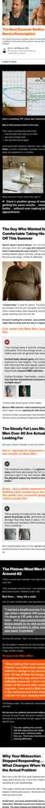
397 live creatives. 111 blocks of copy. 157 pages captured, 28 of them ad-facing. One capsule, eleven storefront listings of it, and a single decision repeated everywhere: the offer goes in the headline, the argument goes on the page.
Copy is the fixed asset; the picture and the page are the variables. One paragraph — the grandfather/plastics/seed-oils block — carries 106 of 397 creatives and 2,411 running ad variants, and it has never had to change, because what rotates around it is the villain and the destination.
The headline almost never argues. “50% Off + Free Gifts 🚀” sits on 172 of 397 creatives. The argument is deferred to a 7,000–23,700px page, and the ad's only job is to buy the click at offer price. That is the inverse of the usual DR setup, where the hook carries the angle and the page closes it.
Everything lands on their own domain — no affiliate network, no third-party advertorial host, no redirect chain. 241 creatives go into a JavaScript quiz, 114 into a “10 Reasons Men Are Ditching TRT” listicle, and the same two shapes are re-cut per complaint: cortisol, GLP-1, energy, weight loss, aging, TRT.
They sell against a treatment, not a competitor. TRT is the named enemy in the headline (“No TRT. No Needles. No Dependency.”), the listicle (“10 Reasons Men Are Ditching TRT”), and the doctor advertorials (“Read This Before Starting TRT”). The category they are stealing from is a prescription, which is why every page argues natural-versus-synthetic before it ever argues Mars Men versus another pill.
The villain rotates; the product never does. Cortisol, estrogen, GLP-1 muscle loss, plastics, seed oils, blue light. Each gets its own block, its own listicle cut and its own quiz — /pages/cortisol-quiz, /pages/10-reasons-glp, /pages/10-reasons-weightloss-v1, /pages/quiz-energy — while the capsule and the offer stay identical.
The proof is a counter. “503,128+ men” in the current cut, “429,576+” in the older one. The number itself is the creative variable — a running total that makes the same claim feel newer each month.
The quiz is the funnel. 241 of 397 creatives land on a quiz, and 54 blocks point at /pages/quiz-v6 alone. It is a custom web component (<mars-men-quiz>, Tailwind 4, shadow DOM) — not a Shopify app, not Typeform. They built it.
No email gate. Eleven questions, two interstitials, then a recommendation and the offer. Nothing is asked for before the discount is shown — the quiz is a commitment device, not a lead capture.
The listicle is a template with slots. Ten numbered reasons, a bylined “fitness expert” author with a Last Updated date, a TLDR, a natural-versus-TRT-versus-generic comparison table, the 90-day guarantee as reason nine. The cuts — -cortisol, -glp, -aging, -energy, -trt-v2 — swap the reasons and keep the skeleton.
Creator-named pages are running as advertorials. /pages/10-reason-bensmith-nc, -kevintorres-nc, -samo-nc, -chronicle. The -nc suffix repeats across three names, which reads as a partner or placement code, not a person's own page.
Two attribution platforms, side by side. Triple Whale and Northbeam both fire on 156 of 157 captured pages, alongside Klaviyo and Postscript SMS. Nobody pays for two attribution stacks on a small account.
No client-side ad pixel in the served HTML. No fbq, no gtag, no TikTok tag in the markup we pulled — tracking is going through Shopify's own pixel layer or server-side, which is also why their pages carry nine web-pixel sandboxes.
One SKU, eleven listings. -for-men-over-40, -for-men-over-50, -for-strength-and-performance, -with-tongkat-ali, -energy-support, and a -ctv-only listing that says they are buying connected TV as well as Meta. The product page is re-titled per ad set rather than per product.
Two blocks carry 153 of 397 creatives, and both of them are the same headline — “50% Off + Free Gifts 🚀” — pointed at two different pages. Below the top five it flattens into a long tail of one- and two-creative blocks: the villain cuts, each getting a small test before it earns volume.
Every page on their site, captured live at 390pt wide, full page, then sorted by what it structurally is. The ad-facing set is 28 pages; the rest is the blog and the store around them. Heights are real: the listicles and advertorials run 7,000–23,700px, because the page is the argument.

mengotomars.com/pages/dr-latt-adv-trtAdvertorial · coded men.
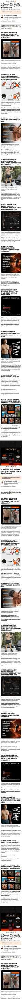
mengotomars.com/pages/10-reasons-glp-shopListicle · coded men.
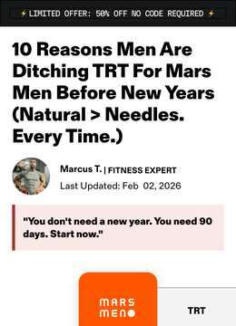
mengotomars.com/pages/10-reasons-shopListicle · coded men.
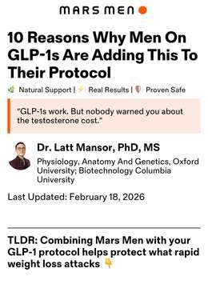
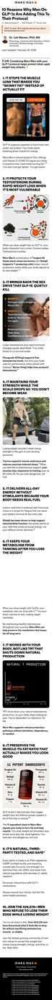
mengotomars.com/pages/10-reasons-glpListicle · coded men.
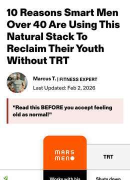
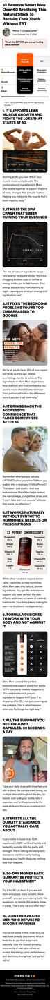
mengotomars.com/pages/10-reasons-agingListicle · coded men.
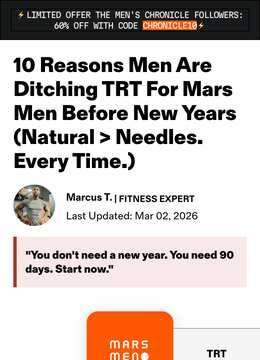
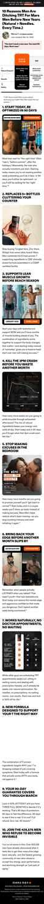
mengotomars.com/pages/10-reason-chronicleListicle · coded men.
mengotomars.com/pages/10-reason-kevintorres-ncListicle · coded men.
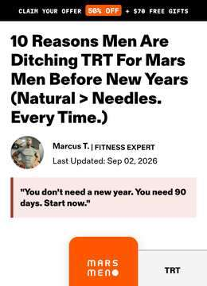
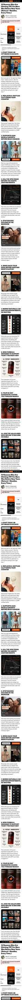
mengotomars.com/pages/10-reasonsThe flagship listicle and the template every other cut is stamped from: bylined “fitness expert”, Last Updated date, TLDR, a three-way comparison table (natural / TRT / generic booster), the guarantee as reason nine, countdown and free-gift cart the whole way down.
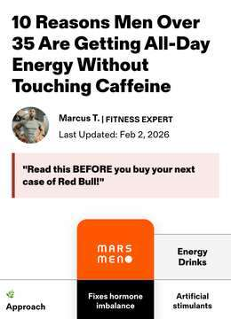
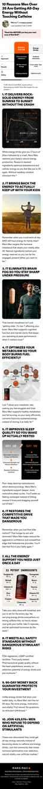
mengotomars.com/pages/10-reasons-energyListicle · coded men.
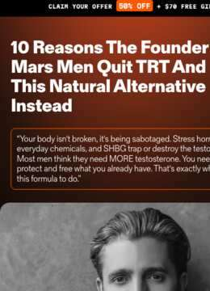
mengotomars.com/pages/10-reason-bensmith-ncListicle · coded men.
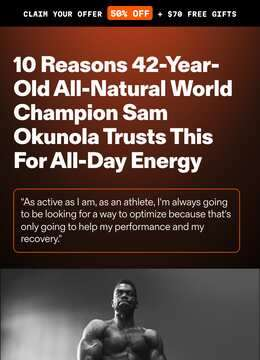
mengotomars.com/pages/10-reason-samo-ncListicle · coded men.
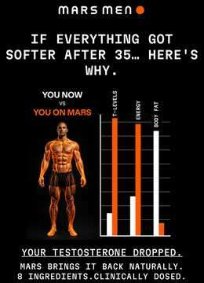
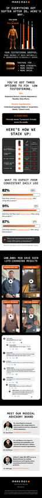
mengotomars.com/pages/more-willpower-2The short interstitial behind “No TRT. No Needles. No Dependency.” — 4,583px, one argument, straight into the offer.
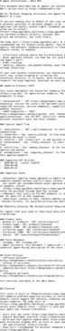
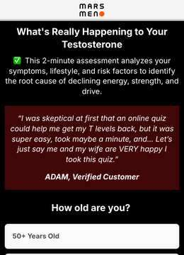
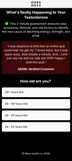
mengotomars.com/pages/quiz-long-v2Quiz · coded men · long · v2.
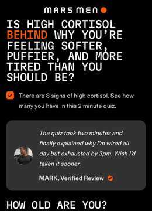
mengotomars.com/pages/cortisol-quizSame component, re-pointed at the cortisol complaint. 11 blocks and 20 creatives land here — the villain gets its own quiz rather than its own copy.
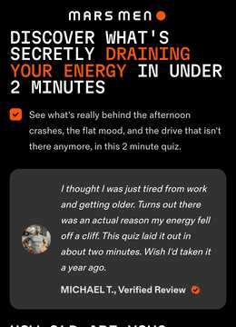
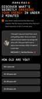
mengotomars.com/pages/quiz-energyQuiz · coded men.
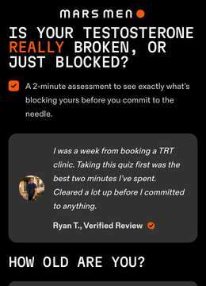
mengotomars.com/pages/quiz-before-trtQuiz · coded men.
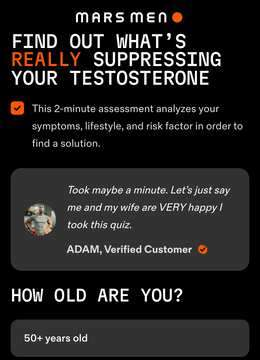
mengotomars.com/pages/quiz-v7Quiz · coded men.
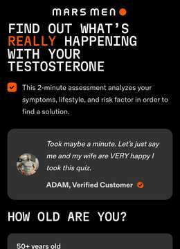
mengotomars.com/pages/quiz-v6The main destination: 54 blocks and 241 creatives come here. A custom <mars-men-quiz> web component in shadow DOM — Tailwind 4, built in-house, invisible to any scraper that reads HTML. Opens on age, routes on complaint, ends on a 90-day supply at a discount.
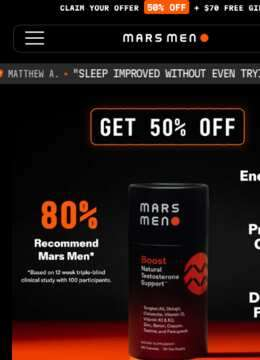
mengotomars.com/products/30-day-supply-starter-kitWhere the 67%-off creatives go. The free-gift stack — travel tin, T e-book, a month of a workout app, a sweepstakes — is unlocked in-cart rather than promised in the ad.
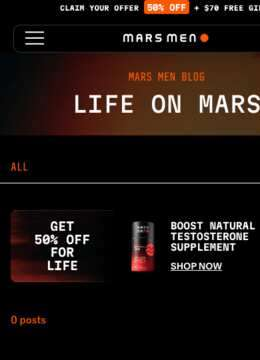
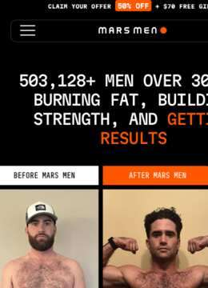
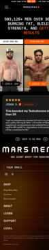
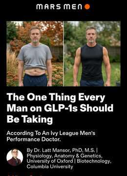
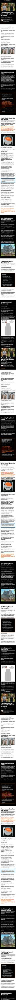
mengotomars.com/pages/dr-latt-glpsalespage · coded men.
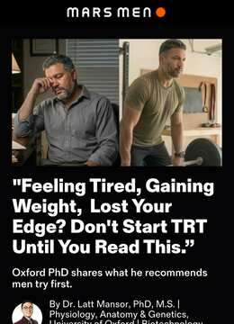
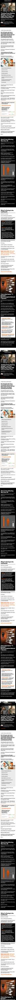
mengotomars.com/pages/dr-latt-before-trt23,310px of argument in a named doctor's voice, aimed at the man who has already booked the TRT consult. Their longest page, and the clearest statement of what they are actually selling against.
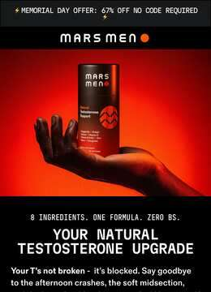
mengotomars.com/pages/t-upgrade-shopsalespage · coded men.
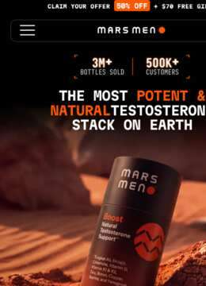
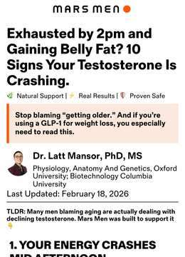
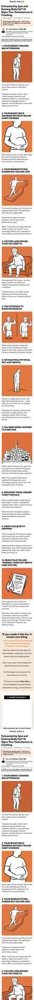
mengotomars.com/pages/10-signsThe symptom-first version: ten signs your T is crashing, same skeleton, diagnosis instead of comparison.
mengotomars.com/pages/t-upgrade-mbsThe page behind the single most-cloned creative in the library — “Block Estrogen. Burn Chest Fat.”, 4,719 running variants off two creatives. Two ads, cloned harder than anything else they run.
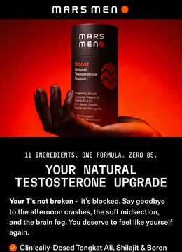
mengotomars.com/pages/t-upgradesalespage · coded men.
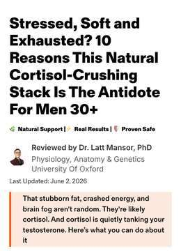
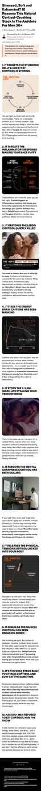
mengotomars.com/pages/10-reasons-cortisolsalespage · coded men.
mengotomars.com/pages/10-reasons-trt-v2salespage · coded men · v2.
mengotomars.com/pages/10-reasons-weightloss-v1salespage · coded men.
Eleven questions, two interstitials, then a recommendation and the offer — walked end to end in a real browser, because the quiz is a shadow-DOM web component and nothing of it exists in the page source. Question one is age; question two is the router, and the complaint you pick there is the complaint the rest of the funnel speaks to. No email is asked for at any point before the discount.
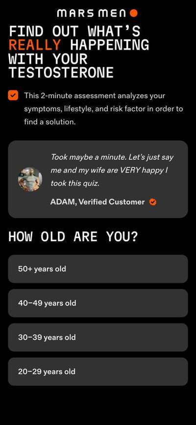
Every creative in the library, sampled evenly across each block's run. Three production modes recur: filmed talking-head UGC in a gym or kitchen, static offer cards with burned-in headline type, and product-on-black stills. Click any still to open the ad's own video or image.
<mars-men-quiz> custom element with Tailwind 4 inside shadow DOM — no quiz app, and invisible to text scrapers.-ctv-only SKU page: connected TV is running alongside Meta.All 111 blocks verbatim, as they run. Copy lifts the block to your clipboard.
Your grandfather had more testosterone at 60 than you do at 35. He didn't have: ❌ Plastics leaching estrogen into his water ❌ Seed oils in everything he ate ❌ Blue light frying his hormones at 11pm You're not weak. You're poisoned. Mars Men was built to fight back. 💪 Tongkat Ali blocks the enzyme stealing your T 💪 Boron frees up testosterone that's locked away 💪 Shilajit grows more T-producing cells in your balls No dirt powders. No cheap fillers. No fairy dust. Just the 8 ingredients designed to support your T production from every angle. 50% off your first month. 90-day guarantee. Stop blaming yourself. Start fighting back.
Fuel testosterone. Flatten belly. Feel invincible—the natural way. Scientifically formulated. Naturally sourced. Discover how Mars Men is helping men support healthy T-levels and reclaim their edge… Shop now and get 50% OFF + FREE gifts 🔥
Your doctor won't tell you: TRT side effects are worse than low testosterone. Skip the needles. Skip the side effects. Skip the $4,000/year. TRT comes with a price: acne, hair loss, fertility issues, and worse. Mars Men gives you the testosterone boost WITHOUT the baggage. Natural. Effective. No doctor visits required. Get 50% off your first bottle + FREE shipping 🔥
GLP-1s suppress appetite so hard your body starts eating muscle for fuel not fat. Mars Men keeps muscle strong, metabolism firing, and T levels protected as fat drops. Natural, third-party tested, and safe no needles, no shutdown. 💪 Get your edge back while burning fat. 👉 50% OFF for a limited time.
Your grandfather had more testosterone at 60 than you do at 35. He didn't have: ❌ Plastics leaching estrogen into his water ❌ Seed oils in everything he ate ❌ Blue light frying his hormones at 11pm You're not weak. You're poisoned. Mars Men was built to fight back. 💪 Tongkat Ali blocks the enzyme stealing your T 💪 Boron frees up testosterone that's locked away 💪 Shilajit grows more T-producing cells in your balls No dirt powders. No cheap fillers. No fairy dust. Just the 8 ingredients designed to support your T production from every angle. 50% off your first month. 90-day guarantee. Stop blaming yourself. Start fighting back.
You eat clean. You train hard. You’re STILL tired and gaining weight. Here’s why. If you’re over 35 and constantly tired, dragging through the day, or frustrated in the gym… It’s not motivation or willpower. It’s testosterone. T levels start dropping around age 30. And that slow hormonal drain robs you of energy, drive, strength, confidence, and performance. One day you wake up and wonder: “What happened?” Most guys try to fix it by doubling down on workouts… eating cleaner… drinking more coffee… And when that doesn’t work? They end up with a cabinet full of overpriced, under-dosed supplements. Or worse, they consider jumping on TRT. Here’s the truth: You don’t need needles, prescriptions, or a dozen bottles. You need one clinically dosed stack that helps your body produce more testosterone, naturally. That’s what Mars Men was built for. It’s an all-in-one daily testosterone support formula with 8 powerhouse ingredients, including: 🌿 Tongkat Ali – Boosts drive, energy, and morning wood 🪨 Shilajit – Fuels stamina so you don’t crash mid-day 🛡️ Zinc – Keeps hormones balanced and focus sharp ⚙️ Boron – Frees up testosterone for more motivation 🌾 Fenugreek – Fires up libido and bedroom confidence ⚡ Taurine – Speeds recovery and sharpens mental focus ☀️💪 Vitamins D, K1 + K2 – Supports bones, mood, and daily energy No BS. No fairy dust. Just full clinical doses your body can feel. In a recent survey, men using Mars Men for 90 days reported: ✅ 91% increase in energy ✅ 87% felt stronger and more recovered ✅ 82% noticed improved vitality ✅ +60% testosterone boost (verified by bloodwork) You take one scoop per day. That’s it. No needles. No stacking. No cycling. Just results. Claim your 90-Day Launch Kit now and get 50% off — plus 2 free gifts: a Testosterone Optimization Guide and portable travel tin. Over 121,000+ men have already transformed their lives with this formula. If you don’t feel stronger, sharper, and more energized in 90 days — you get every penny back. No questions asked. 👉 Reclaim your masculinity. Naturally. Click the link below.
The weight's coming off. But so is your testosterone. GLP-1 meds are incredible for dropping pounds. Nobody's arguing that. But here's what your prescribing doctor probably didn't mention. Rapid weight loss triggers a massive cortisol spike. Cortisol tanks testosterone production at the source. Y our body starts burning muscle for fuel instead of protecting it. Your energy craters. Your drive disappears. Your strength fades. You're thinner — but weaker, foggier, and running on fumes. That's not a win. Mars Men was built to protect what GLP-1s are quietly destroying. Tongkat Ali blocks the cortisol spike that crashes your T during rapid weight loss. Boron lowers SHBG so the testosterone you still have isn't locked up and useless. 8 clinically-dosed ingredients attacking the problem from every angle. This isn't theory. 91% of men in a 1,000-person survey reported higher energy within 90 days. 87% reported increased strength. Results backed by bloodwork, not promises. Right now it's 50% off with a full 90-day money-back guarantee. Read the 10 reasons men on GLP-1s are adding this to their daily stack.
🎉 LABOR DAY SALE 🔥 67% OFF + FREE GIFTS 🔥 Scientifically formulated. Naturally sourced. Discover how Mars Men is helping men support healthy T-levels and reclaim their edge… Shop now and try Mars Men for only $39 on your first purchase. Offer ends September 8th!
Your grandfather had more testosterone at 60 than you do at 35. He didn't have: ❌ Plastics leaching estrogen into his water ❌ Seed oils in everything he ate ❌ Blue light frying his hormones at 11pm You're not weak. You're poisoned. Mars Men was built to fight back. 💪 Tongkat Ali blocks the enzyme stealing your T 💪 Boron frees up testosterone that's locked away 💪 Shilajit grows more T-producing cells in your balls No dirt powders. No cheap fillers. No fairy dust. Just the 8 ingredients designed to support your T production from every angle. 50% off your first month. 90-day guarantee. Stop blaming yourself. Start fighting back.
Fuel testosterone. Flatten belly. Feel invincible - the natural way. Scientifically formulated. Naturally sourced. Discover how Mars Men is helping men support healthy T-levels and reclaim their edge… Shop now and get 60% OFF with Code: CHRONICLE
Tired by 2 PM? Need 3 cups of coffee just to function That's not normal aging. That's testosterone collapse. Mars Men restores the steady, youthful energy you used to have. No crashes. No jitters. Just all-day vitality. Get 50% off + FREE shipping 🔥
TRT clinics want you on injections for life. Mars Men wants you making your own testosterone. 8 clinically-dosed ingredients that support your body's natural T production — no needles, no dependency, no shutting down what your body already knows how to do. Tongkat Ali blocks the enzyme converting your T to estrogen. Boron frees up the testosterone your body already makes but can't use. 429,576+ men have made the switch. 50% off with a 90-day guarantee. See the 10 reasons men are choosing this over TRT →
20 spots. 90 days. And a guarantee most supplement companies would never make. Every month you put this off, your testosterone drops a little further. Not dramatically — that's what makes it dangerous. It's slow enough that you adjust. You normalize the fatigue. The irritability becomes "just your personality." The belly fat becomes "genetics." But here's what's actually happening inside your body right now: Cortisol is suppressing your T production at the source. SHBG is binding what little testosterone you make so your body can't use it. And aromatase is converting what's left into estrogen. Three thieves. Running a 24/7 heist on your hormones. None of them are slowing down while you "think about it." Mars Men's 8-ingredient formula was designed to address all three simultaneously. Tongkat Ali drives down cortisol and blocks estrogen conversion. Boron lowers SHBG to free locked testosterone. Shilajit supports the Leydig cells responsible for T production. This isn't a caffeine pill. It's a clinically-dosed stack built by a founder whose own T tested at 281 at age 24 — and who refused to accept needles for life. Rick S. went from 453 to 758 in three months. He'd tried 10 different supplements before Mars Men. "This is the only one that worked. The bloodwork doesn't lie." Mars Men is hand-selecting 20 men for a 90-day case study. 50% off for life. 90-day money-back guarantee. But 20 spots is 20 spots. See the 3 testosterone thieves robbing your T — and the 8-ingredient stack designed to help your body fight back.
Embarrassed by "moobs"? Those aren't just from extra calories. They're a visible sign of the hormone imbalance affecting millions of men. Let's talk about something most men never mention... Those embarrassing "moobs" that make them keep their shirt on at the beach. Here's the truth: they're not just about extra pizza or skipping chest day. They're a visible symptom of the hormone imbalance affecting millions of men. See, when our hormone levels drop (which research shows starts happening around 30), our body's balance shifts. The result? Soft tissue where pecs should be. And that same imbalance is why men feel drained by 3PM... why workouts feel flat... why their drive isn't what it used to be. The Massachusetts Male Aging Study confirmed what many men feel… Hormone levels are declining faster than ever before, regardless of age. You can try everything... More bench presses. Cutting carbs. Fat burners. Even considering surgery. But if you don't address the underlying hormone balance, you're just wasting time and money. That's why we created Mars Men. It's an all-in-one natural formula with 8 powerful ingredients designed to support your body's natural balance: 🌿 Tongkat Ali: Helps regulate cortisol while supporting natural hormones 🪨 Shilajit: Improves stamina and helps your body feel younger 🛡 Zinc: Essential mineral for hormone production ⚙️ Boron: Helps optimize free hormone levels 🌾 Fenugreek: Supports healthy male vitality ⚡ Taurine: Improves circulation and recovery ☀️ Vitamins D, K1 + K2: Support mood and hormone balance In a recent survey of Mars Men customers: ✅ 91% reported higher energy levels ✅ 87% noticed increased strength ✅ 82% experienced improved vitality 5 capsules per day. That's it. No needles or prescriptions. Just a simple daily habit that helps support your body's natural hormone balance. Try the 90-Day Kit today | 50% OFF + 2 free gifts. If it doesn't work for you? You don't pay. Period. Reclaim your masculine physique. Naturally.
Your belly fat isn't a calorie problem. It's a cortisol problem. You're eating clean. You're training hard. And that gut won't budge. Here's what no one told you: chronic stress floods your system with cortisol — and cortisol does three things men over 30 can't afford. It tells your body to store fat around your midsection. It tanks your testosterone production at the source. And it locks the T you DO make behind a protein called SHBG — so your body can't even use it. That's not a discipline problem. That's biochemistry working against you. Mars Men was built to break that cycle. Clinically-dosed Tongkat Ali at 1,000mg blocks the enzyme that converts your testosterone to estrogen — and drives cortisol down. Boron lowers SHBG so your body actually uses the testosterone it makes. Eight ingredients total, attacking the problem from three angles: make more T, keep more T, use more T. 91% of men in a 1,000-person survey reported higher energy within 90 days. 87% reported increased strength. That's what happens when you stop fighting your hormones and start fixing them. Right now it's 50% off with a full 90-day money-back guarantee. If your cortisol isn't down and your edge isn't back, you pay nothing. See why your metabolism isn't broken — your cortisol is just running the show.
There's one enzyme quietly converting your testosterone into estrogen every single day - and most men have never heard its name. It's called aromatase. It's one of three "thieves" that decide how much usable T actually reaches your body, no matter how hard you train or how clean you eat. This is why some men diet, lift, and grind with almost nothing to show for it. The problem isn't willpower. It's hormonal, and it's fixable. Mars Men targets all three thieves at once. Tongkat Ali blocks the aromatase enzyme and lowers cortisol. Boron drops SHBG so your testosterone stops sitting locked up and unusable. 8 ingredients, full clinical doses, reviewed by an Oxford PhD. 67% off for a limited time with a 90-day Higher-T guarantee.
Anxiety gone. Sleep problems gone. Recovery issues gone. Benjamin's T went from below 300 to almost 900 — and every area of his life followed. Sharper focus. More decisive. Leaner and stronger in his 30s than he was in his 20s. He didn't get there with TRT. He got there by building Mars Men — 8 clinically dosed ingredients anchored by 1,000mg of Tongkat Ali to support free testosterone and help drive cortisol down. 50% off your first order. 90-day guarantee backs every bottle. See the full formula and his founder story.
Cortisol is quietly reshaping your body. And you're blaming everything else. The fog that rolls in by 2pm. The belly fat that won't move no matter how clean you eat. The edge you used to have — in the gym, at work, at home — that disappeared so slowly you almost didn't notice. That's not just aging. That's chronically elevated cortisol doing exactly what it's designed to do: suppress testosterone production, trigger abdominal fat storage, and keep your brain stuck in survival mode instead of performance mode. Every stressed week compounds. Cortisol rises. Testosterone drops. And the gap between who you are and who you were widens. Most supplements try to boost one number. Mars Men was designed to work both sides of the equation — support natural testosterone production AND lower the stress hormone that's suppressing it. Tongkat Ali (1,000mg) targets aromatase and cortisol simultaneously. Shilajit (400mg) contains fulvic acid that supports the Leydig cells — the cells responsible for making testosterone in the first place. 429,576+ men are already using this stack daily. 82% of surveyed customers reported improved male vitality. 50% off your first order. Full 90-day money-back guarantee. No questions asked. Read how stress hormones are silently reshaping your body — and what 8 clinically-dosed ingredients do about it.
Fuel testosterone. Flatten belly. Feel invincible—the natural way. Scientifically formulated. Naturally sourced. Discover how Mars Men is helping men support healthy T-levels and reclaim their edge… Shop now and get 50% OFF + FREE gifts 🔥
Your testosterone is dropping right now. And it's not "just getting older." Every single month you put off doing something about it, your body converts more of your remaining T into estrogen. Your SHBG locks up what's left. And cortisol — from stress, bad sleep, and modern life — tanks production at the source. That brain fog at 2pm? The gut that won't budge no matter what you eat? The fact that you'd rather scroll your phone than do anything with your evening? That's not laziness. That's a hormone problem. And it compounds the longer you wait. Mars Men was built to fight all three thieves simultaneously. Tongkat Ali blocks the enzyme that converts your T to estrogen and drives cortisol down. Boron lowers SHBG so your body can actually use the testosterone it makes. And the full 8-ingredient stack works across three pathways — making more T, keeping what you've got, and protecting the cells that produce it. 91% of men reported higher energy within 90 days in a survey of over 1,000 customers. Not a vague "maybe I feel something." Real, noticeable energy. Right now it's 50% off — plus free gifts and free shipping. Every bottle is backed by a 90-day Higher-T Guarantee. If you don't feel the difference, you get every cent back. But here's the thing — your T isn't going to fix itself while you "think about it."
His doctor told him no supplement could move the needle. His bloodwork shut that conversation down. Mars Men packs 8 clinically-dosed ingredients that attack the three thieves stealing your testosterone — SHBG, aromatase, and cortisol. Tongkat Ali blocks estrogen conversion. Boron frees locked-up T. Shilajit fuels the cells that make it. The result? Lab-verified numbers that make endocrinologists do a double take. 50% off today with a 90-day Higher-T Guarantee. See the verified bloodwork results that are making TRT clinics nervous →
Stop blaming your age for the crash at 2pm. Stop blaming your metabolism for the belly fat that won't budge. Stop blaming "getting older" for the brain fog, the zero motivation, and a drive that quietly left the building. Your grandfather at 42 didn't have these problems. You do — because three thieves are stealing your testosterone around the clock: cortisol, estrogen, and SHBG. Mars Men attacks all three. 1,000mg Tongkat Ali. 400mg Shilajit. 8 ingredients at clinical doses. 90-day money-back guarantee. See why "just getting older" is a lie — and what 429,576+ men are doing about it.
Ever notice the boring basics stop working the same around 40? Same training, same food, same effort - less to show for it. That's not you getting lazy. It's your testosterone sliding a percent or two every year. Mars Men is the daily foundation that supports what the basics can't reach. Boron helps free up the testosterone your body already makes. 50% off, 90-day guarantee. Read the 10 reasons your afternoon crash is really a testosterone problem.
Your doctor will blame aging. Your trainer will blame your diet. They're both wrong. If you're a man over 35 carrying stubborn belly fat, dragging through your afternoons, and watching your drive slowly disappear — there's something else going on. Something almost nobody talks about. Cortisol. Your body's stress hormone has been running unchecked for years. And it's been quietly doing two things: storing fat around your midsection and suppressing the testosterone your body needs to burn it off. It's a brutal cycle. More stress. More cortisol. Less testosterone. More fat. More stress. Round and round. The gym won't break that cycle. Neither will another diet. Mars Men is the first supplement stack built specifically to address both sides — supporting healthy testosterone production AND healthy cortisol response at the same time. Eight clinically-dosed ingredients. Tongkat Ali supports free testosterone and helps manage cortisol. Fenugreek helps keep your T from converting to DHT. Zinc provides the raw material your body needs for T synthesis — and most men are deficient without knowing it. 50% off right now. 90-day Higher-T Guarantee — if you don't feel a difference, you don't pay. See what happens when you stop blaming your diet and start addressing what's really stealing your testosterone.
"It's just what happens when you get older." That's what they told you about your jawline disappearing. About your face getting puffy. About losing the definition you had at 30. They're wrong. Your grandfather at 45 probably had a sharper face than most men today at 30. Men's average testosterone has dropped 25% since 1980 — from 800+ ng/dL to around 400. This isn't aging. This is a modern hormonal crisis. And your face is the scoreboard. The real culprit? Cortisol. Chronic stress, processed food, endocrine disruptors in plastics — they all spike cortisol. And elevated cortisol does two things: it tells your body to store fat and retain water in your face, and it directly suppresses testosterone production. Less T plus more cortisol equals the soft, puffy look men blame on birthdays. Stop blaming your age. Start blaming your hormones. Mars Men is an 8-ingredient clinical-dose formula designed to support natural testosterone production and drive cortisol down. It's not a single magic pill — it's a multi-pathway system. Tongkat Ali supports free T and helps manage cortisol. Boron lowers SHBG to unlock the testosterone your body already makes. Zinc provides the raw material your body needs for T synthesis. Jorge R.'s testosterone went from 249 to 1,100. He had to lower the dose. Kevin S. hit 422 to 756 in 30 days — no TRT, just the right stack plus consistent training and nutrition. Your face didn't change because of your birthday. It changed because of your hormones. 50% off right now. 90-day money-back guarantee. No prescriptions. No needles. No dependency. Read what really happens to your body — and your face — when cortisol goes down and testosterone goes up →
Why do some men store fat in their chest no matter how hard they train? There's an enzyme in your body called aromatase. Its job is to convert testosterone into estrogen. More estrogen means more fat — especially in your chest. Mars Men's Tongkat Ali blocks that conversion. Boron lowers SHBG so your body can actually use the T it makes. $59 (50% off). 90-day guarantee. See the 10 reasons your chest fat has nothing to do with push-ups.
Your belly fat isn't from eating too much. It's from hormonal collapse. Stubborn belly fat. Man boobs. Love handles that won't budge. That's not from overeating. That's from low testosterone. When T drops, your body stores fat like a woman. Mars Men changes that. Natural testosterone support = natural fat burning. Get 50% off + FREE gifts 🔥
You eat clean. You train hard. You’re STILL tired and gaining weight. Here’s why. If you’re over 35 and constantly tired, dragging through the day, or frustrated in the gym… It’s not motivation or willpower. It’s testosterone. T levels start dropping around age 30. And that slow hormonal drain robs you of energy, drive, strength, confidence, and performance. One day you wake up and wonder: “What happened?” Most guys try to fix it by doubling down on workouts… eating cleaner… drinking more coffee… And when that doesn’t work? They end up with a cabinet full of overpriced, under-dosed supplements. Or worse, they consider jumping on TRT. Here’s the truth: You don’t need needles, prescriptions, or a dozen bottles. You need one clinically dosed stack that helps your body produce more testosterone, naturally. That’s what Mars Men was built for. It’s an all-in-one daily testosterone support formula with 8 powerhouse ingredients, including: 🌿 Tongkat Ali – Boosts drive, energy, and morning wood 🪨 Shilajit – Fuels stamina so you don’t crash mid-day 🛡️ Zinc – Keeps hormones balanced and focus sharp ⚙️ Boron – Frees up testosterone for more motivation 🌾 Fenugreek – Fires up libido and bedroom confidence ⚡ Taurine – Speeds recovery and sharpens mental focus ☀️💪 Vitamins D, K1 + K2 – Supports bones, mood, and daily energy No BS. No fairy dust. Just full clinical doses your body can feel. In a recent survey, men using Mars Men for 90 days reported: ✅ 91% increase in energy ✅ 87% felt stronger and more recovered ✅ 82% noticed improved vitality ✅ +60% testosterone boost (verified by bloodwork) No needles. No stacking. No cycling. Just results. Claim your 90-Day Launch Kit now and get 50% off — plus 2 free gifts: a Testosterone Optimization Guide and portable travel tin. Over 121,000+ men have already transformed their lives with this formula. If you don’t feel stronger, sharper, and more energized in 90 days — you get every penny back. No questions asked. 👉 Reclaim your masculinity. Naturally. Click the link below.
What happens when you flush the excess estrogen most men over 30 don't know they're carrying? Here's what they don't teach you: your testosterone isn't just "low." It's being actively converted, locked up, and suppressed every single day by three things working against you. And the more stress, poor sleep, and everyday plastics pile up, the worse it gets. That's the gap Mars Men closes. Eight clinically-dosed ingredients your doctor probably never mentioned, built around a simple idea - don't take testosterone, make it. Shilajit grows the cells that produce it. Tongkat Ali blocks the enzyme converting it to estrogen. Boron frees what's been locked away. Dr. Latt Mansor, an Oxford PhD, helped vet the science. 91% of men reported higher energy in 90 days. It's 50% off right now with a 90-day Higher-T guarantee, so there's no risk in finding out. Take the 60-second quiz to uncover what's really happening with your testosterone - most men are shocked by their result.
No amount of bench press will fix man boobs. That extra chest fat isn't a training problem. It's a hormone problem. When your testosterone drops and estrogen creeps up, your body starts storing fat exactly where you don't want it — your chest, your gut, your love handles. You could do 500 push-ups a day and it won't matter if your hormones are working against you. Here's what's actually happening: an enzyme called aromatase is converting your testosterone into estrogen. Meanwhile, a protein called SHBG is locking up whatever testosterone you have left so your body can't even use it. More chest exercises won't fix that. Crash diets won't fix it either. Mars Men was built to attack the root cause. 8 clinically-dosed ingredients that work on three levels: Tongkat Ali (1,000mg) blocks the aromatase enzyme — the one converting your T into the estrogen that's building your chest fat. Boron (4mg) lowers SHBG so your body can actually use the testosterone it makes. Shilajit (400mg) supports Leydig cell function — the cells responsible for producing testosterone in the first place. This isn't a fat burner. It's not a pre-workout. It's a hormone support stack that goes after the reason your body is storing fat like that in the first place. 91% of men in a 1,000-customer survey reported higher energy within 90 days. 87% reported increased strength. Real men, real results — like Joshua D., who went from 254 to 861 ng/dL in about 6 weeks. Right now it's 50% off with a 90-day Higher-T Guarantee. If your bloodwork doesn't improve, you get every penny back. Read the 10 hormonal reasons your body is holding onto chest and belly fat — and why fixing your testosterone changes everything.
There's a stress hormone silently stealing your testosterone and turning it into belly fat. It's called cortisol. And it's why you can't sleep, can't lose the gut, and feel exhausted by 2pm. Mars Men is the only formula with 8 clinically-dosed ingredients designed to support healthy cortisol AND natural T production. 50% off with a 90-day guarantee. Read the 10 reasons your dad bod has nothing to do with diet.
429,576+ men didn't switch to Mars Men because of a slick ad. They switched because their bloodwork changed. One man's doctor told him nothing natural would work. Sixty days later, that same doctor was staring at lab results he couldn't explain. Another guy tried 10 different supplements — spent hundreds — before finding the one his bloodwork actually responded to. His words: "The bloodwork doesn't lie." Then there's the guy who QUIT TRT for Mars Men and came back with higher numbers than he ever had on testosterone replacement therapy. Or the 52-year-old who lost 30 pounds and says his wife can't keep her hands off him. These aren't cherry-picked outliers. In a survey of over 1,000 customers: → 91% reported higher energy in 90 days → 87% reported increased strength → 82% reported improved male vitality The formula: 8 clinically-dosed ingredients targeting testosterone from three angles — make more (Shilajit, Zinc, D3), keep more (Tongkat Ali, Boron, Fenugreek), and protect what you've got (Taurine). Every batch third-party tested. cGMP certified. Made in the USA. 50% off. Plus a 90-day money-back guarantee. No risk. Just results or a full refund.
Your stress is eating your testosterone alive. Every deadline. Every bad night of sleep. Every argument you swallow instead of address. Your body responds the same way every time — it floods you with cortisol. And here's what nobody tells you: cortisol and testosterone sit on a seesaw. When one goes up, the other crashes down. It's not a theory. It's basic endocrinology. So that gut you can't lose? The brain fog at 2pm? The fact that your wife has to ask you three times before you get off the couch? That's not aging. That's cortisol winning. Mars Men is the only natural formula built to fight back on both fronts — driving cortisol down while pushing testosterone up. > Tongkat Ali blocks the enzyme that converts your T into estrogen AND actively reduces stress hormones. Taurine protects the cells that produce testosterone from oxidative damage. Eight ingredients total, all at clinical doses. 91% of men in a 1,000-person survey reported higher energy within 90 days. Right now it's 50% off with a 90-day money-back guarantee. You pay nothing if it doesn't work. See the 3 hormones quietly blocking your testosterone — and what 429,576+ men are doing about it.
Your stress hormone is eating your testosterone alive. Not next year. Not "eventually." Right now — while you're scrolling. Every time your stress spikes — the bad sleep, the work pressure, the packed schedule — your body floods with cortisol. And cortisol doesn't just make you feel wired and tired. It actively shuts down testosterone production at the source. Think of it as a thief running a 24/7 heist on your T. The more stressed you are, the less testosterone your body makes. Less energy. Less drive. Less muscle. Less of everything that makes you feel like you. And here's the brutal part: it compounds. Every month you don't address it, your levels drop further. Mars Men was built to crush cortisol while supporting healthy testosterone levels — the only formula designed to do both. Tongkat Ali at a full 1,000mg clinical dose drives cortisol down and blocks the enzyme that converts your T to estrogen. Boron lowers SHBG so your body can actually use the testosterone it makes. Eight ingredients. Three levels of attack. 91% of men reported higher energy within 90 days in a survey of 1,000 customers. 50% off right now with free shipping, a free T guide, and a 90-day money-back guarantee. See the full 4-level system that attacks all three testosterone thieves at once.
The weight's coming off. But so is your testosterone. GLP-1 meds are incredible for dropping pounds. Nobody's arguing that. But here's what your prescribing doctor probably didn't mention. Rapid weight loss triggers a massive cortisol spike. Cortisol tanks testosterone production at the source. Your body starts burning muscle for fuel instead of protecting it. Your energy craters. Your drive disappears. Your strength fades. You're thinner — but weaker, foggier, and running on fumes. That's not a win. Mars Men was built to protect what GLP-1s are quietly destroying. Tongkat Ali blocks the cortisol spike that crashes your T during rapid weight loss. Boron lowers SHBG so the testosterone you still have isn't locked up and useless. 8 clinically-dosed ingredients attacking the problem from every angle. This isn't theory. 91% of men in a 1,000-person survey reported higher energy within 90 days. 87% reported increased strength. Results backed by bloodwork, not promises. Right now it's 50% off with a full 90-day money-back guarantee. Read the 10 reasons men on GLP-1s are adding this to their daily stack.
You're not out of shape. You're not lazy. Your cortisol is just running the show. That gut that won't budge no matter how clean you eat? Cortisol is telling your body to store it there. That muscle you're losing despite hitting the gym 4x a week? Cortisol is breaking it down for energy. That afternoon crash that has you reaching for your third coffee by 2pm? Cortisol burned through your real energy hours ago. Every symptom you've been blaming on age, diet, or discipline has the same root cause — a stress hormone that's been elevated so long your body thinks it's normal. It's not normal. And it's fixable. But here's what won't fix it: more willpower. More cardio. Another pre-workout. A stricter meal plan. You can't out-discipline a hormone problem. Mars Men attacks cortisol directly. Clinically-dosed Tongkat Ali supports healthy cortisol levels while blocking the enzyme that converts your testosterone into estrogen. Boron frees up testosterone that's been locked away by SHBG — so the T your body still makes can actually do its job. 8 ingredients. No proprietary blends. Every dose printed on the label. 87% of men in a 1,000-person survey reported increased strength. 91% reported higher energy. Not from stimulants — from hormones working properly for the first time in years. 50% off right now. 90-day money-back guarantee — zero risk. Stop blaming yourself for what cortisol is doing to your body. Read the full breakdown of how it works — and what to do about it.
Most testosterone supplements are hiding something behind their "proprietary blend" label. Here's what they don't want you to see. You're swallowing 2-3 underdosed ingredients buried in fillers — and wondering why nothing changes. Your T keeps dropping. Your energy keeps tanking. And every month you wait, those three thieves — SHBG, aromatase, and cortisol — steal more of what you have left. Mars Men shows you exactly what's inside. 8 ingredients. Full clinical doses. No proprietary blend. No mystery powder. Tongkat Ali at 1,000mg blocks the enzyme converting your T to estrogen. Boron at 4mg lowers SHBG so your body can actually USE the testosterone it makes. 91% of men surveyed reported higher energy within 90 days. Not from stimulants. From actually addressing the hormone problem. Right now it's 50% off with a 90-day money-back guarantee. See how 8 ingredients work across 3 levels to unblock your testosterone — and why most formulas only target one.
Give yourself a head start toward better energy, focus, and burning stubborn belly fat. Reality check: If your testosterone is broken, willpower won't save you. Fix your hormones FIRST. Then watch your resolutions actually stick. Mars Men - New Year Sale: 50% off + FREE gifts 🔥 Sale ends soon. Lock it in NOW.
You don't have 8 separate problems. You have one. Puffy face. Stubborn belly fat. Brain fog. Low libido. Waking up at 3AM staring at the ceiling. Your doctor might call it stress. Or aging. Or "just how it is after 40." He's wrong. Every single one of those symptoms traces back to the same root: elevated cortisol crushing your testosterone. Cortisol is supposed to spike when you're in danger and drop back down. But modern life — the screens, the deadlines, the terrible sleep — keeps it jacked up 24/7. And when cortisol stays high, your body literally prioritizes stress hormones over testosterone production. You're not falling apart. Your hormones are out of order. Mars Men is the only natural formula that addresses both sides — supporting healthy T production while helping bring cortisol back in line. Shilajit at 400mg supports the Leydig cells that manufacture testosterone. Tongkat Ali at 1,000mg blocks estrogen conversion and supports cortisol reduction. Together with 6 more clinical-dose ingredients, it's a system — not a single-ingredient gamble. Joshua D. went from 254 to 861 ng/dL in about 6 weeks. More than 3X his starting level. No TRT. No injections. 429,576+ men are already in the community. 87% reported increased strength in a 1,000-person customer survey. 50% off right now. 90-day money-back guarantee. Read the full cortisol-testosterone breakdown and see how one natural stack is helping men reclaim what stress stole — without needles or prescriptions.
Your doctor says TRT is the answer. Nobody mentions it shuts down your HPTA axis — the very system your body uses to make testosterone on its own. There's a reason 429,576+ men are choosing a different path. Mars Men supports natural T production with 8 clinically-dosed ingredients that work with your biology, not against it. Tongkat Ali drives cortisol down. Boron frees locked-up T. 90-day guarantee. Read this before your doctor puts you on injections for life.
Your pecs are in there. Buried under hormonal fat that has nothing to do with how hard you train. You've done the bench press. The push-ups. The cables. You've put in the work — and your chest STILL looks soft. That's not a training problem. That's a hormone problem. When your testosterone drops and estrogen rises, your body starts storing fat in places it shouldn't — especially your chest. Those aren't "underdeveloped pecs." That's estrogen literally reshaping your upper body. And no amount of decline bench is going to out-train a hormonal imbalance. Mars Men was built to attack this at the root. 8 clinically-dosed ingredients that work on three levels: Tongkat Ali (1,000mg) blocks the enzyme that converts your testosterone into estrogen — the exact conversion responsible for chest fat storage. Boron (4mg) lowers SHBG so your body can actually use the testosterone it already makes instead of locking it up. The result? Your body stops hoarding fat where it doesn't belong and starts using it as fuel. 91% of men in a 1,000-person survey reported higher energy within 90 days. 87% reported increased strength. And guys like Joshua D. watched their T go from 254 to 861 — more than 3X — without TRT. This summer, be the man who takes his shirt off first. Not because you're reckless. Because you earned it. Right now Mars Men is 50% off with a 90-day Higher-T Guarantee. If your chest doesn't change, you pay nothing. Read the 10 hormonal reasons your body stores fat where it shouldn't — and what 429,576+ men are doing about it.
Three months from now, you're either shirtless and confident — or reaching for the cover-up again. Summer doesn't wait for you to figure it out. And that shirt you keep wearing at the pool? Your kids notice. Your wife notices. You notice. Man boobs aren't a calories problem. They're an estrogen problem. Your body is literally converting testosterone into the hormone that stores fat in your chest. Less T, more estrogen, more tissue where you don't want it. That's why bench press and cutting carbs haven't worked. You've been fighting the symptom while the cause runs unchecked. Mars Men targets the actual mechanism. Tongkat Ali inhibits the enzyme responsible for T-to-estrogen conversion. Fenugreek blocks another conversion pathway that drains your free testosterone. Together with 6 more clinically-dosed ingredients, the formula attacks hormonal weight gain from every angle. 91% of men in a 1,000-customer survey reported higher energy within 90 days. 87% reported increased strength. Those aren't cherry-picked lab results — that's what real men experienced. 50% off right now with free shipping and a 90-day money-back guarantee. Man boobs gone or your money back. Period. See the 10 reasons high T is the best weight loss protocol for men ↓
There's a version of you that didn't need three coffees to function. A version that woke up ready. That had the drive to train hard, the patience for his kids, and the edge that made him — him. That guy didn't disappear because you got lazy. He disappeared because your testosterone started dropping. About 1% per year after 30. Silently. While you blamed yourself for not "wanting it" enough. Mars Men was built to bring that man back. Not with synthetic hormones. Not with stimulants that crash you harder by 2pm. With 8 natural ingredients at full clinical doses — the same ones your body needs to make, free, and protect its own testosterone. Shilajit increases the Leydig cells responsible for testosterone production. Fenugreek keeps your T from converting into DHT. And Tongkat Ali manages the cortisol that's been quietly sabotaging your energy, your recovery, and your drive for years. This isn't about turning back the clock. It's about giving your biology what it's been missing. 87% of men surveyed reported increased strength. 82% reported improved vitality. Joshua D. watched his testosterone go from 254 to 861 in about six weeks. It's 50% off right now with a 90-day money-back guarantee. Five capsules with breakfast. That's the whole routine. See the 10 reasons men over 40 are reclaiming what aging tried to take — starting with the one nobody talks about.
Stop googling "how to boost energy" and start looking at your hormones. You've tried the cold showers. The 5am routine. The third cup of coffee by noon. You've white-knuckled through workouts that used to feel easy. And you're still dragging. Here's the truth nobody in the fitness industry wants to say out loud: the problem isn't your habits. It's your biology. After 30, your body starts losing the hormonal edge that made everything easier in your 20s. Not because you're lazy or undisciplined. Because three thieves — SHBG, aromatase, and cortisol — are running a 24/7 heist on your testosterone. Most supplements throw one or two ingredients at the problem and hope for the best. Mars Men targets all three pathways simultaneously with 8 clinically-dosed compounds. Tongkat Ali blocks aromatase — the enzyme turning your testosterone into estrogen. Boron drops SHBG so locked-up testosterone gets freed. Taurine protects the Leydig cells that produce T in the first place. Barry S. is 62 and says he's stronger now than he was in his 20s and 30s. Alex B. went from 5 coffees a day to just one. This isn't another stimulant bandaid. It's root-cause support. 50% off. 90-day guarantee. 5 capsules with breakfast. Check the 10 signs of declining testosterone — most men hit at least half the list and blame it on everything except hormones.
There's a reason you feel like a faded copy of who you were 10 years ago - and it's probably not what your doctor told you. "Everything looks normal." You've heard it. Meanwhile you're tired by 2pm, softer around the middle, and the drive that used to come easy now takes a fight. Here's what most men never learn: your testosterone might not be low on paper - it might be blocked. Three quiet thieves are running the heist. SHBG locks it up. Aromatase converts it to estrogen. Cortisol shuts down production before it starts. That's the gap 8 ingredients in Mars Men were built to close. Tongkat Ali blocks the estrogen conversion and pulls cortisol down. Shilajit feeds the cells that actually make testosterone. Boron frees what's locked so your body can finally use it. What happens when all three thieves get shut out at once? 91% of men reported higher energy in 90 days. Guys like Jorge R. went from 249 to 1,100 and had to LOWER the dose. It's 50% off right now with a 90-day money-back guarantee. Take the quiz to check the 10 signs your testosterone is crashing - most men have at least 4 and never knew why.
Blaming your age for the soft midsection, fading drive, and 2pm crashes? It's not Father Time. It's cortisol. You've been told this is normal. That every man over 30 just… slows down. Gets softer. Loses his edge. But your grandfather at 45 likely had higher testosterone than most men today at 25. What changed wasn't evolution. It was stress. Chronic cortisol — the stress hormone your body pumps out every time you're under pressure — is one of the three thieves running a 24/7 heist on your testosterone. It suppresses T production directly. It triggers the conversion of T into estrogen. And it tells your body to store visceral fat right around your gut. The problem isn't aging. The problem is that nobody has addressed cortisol. Mars Men is built to fight all three thieves at once. Tongkat Ali blocks the enzyme that converts your testosterone to estrogen while actively driving cortisol down. Shilajit increases the Leydig cells — the cells that actually produce your testosterone. Boron frees up the T that SHBG has locked away. 8 clinically-dosed ingredients. No proprietary blends. Every milligram printed on the label. 87% of users reported increased strength. 91% reported higher energy within 90 days. 50% off right now, backed by a 90-day money-back guarantee. Read why cortisol — not aging — is the real reason your body changed after 30 ↓
Stop blaming Father Time. Your grandfather had higher T at 45 than most men today at 25. Men's average testosterone dropped 25% since 1980. It's not aging — it's environment, stress, and three biological thieves gutting your hormones. Mars Men's formula targets all three pathways with 8 full-dose ingredients. 50% off plus a 90-day guarantee. Take the 2-minute assessment to see what's really happening with your testosterone.
You didn't get lazy. Your hormones shifted. The drive that used to come automatically — the alarm you actually wanted to answer, the energy that lasted past dinner — that was testosterone. When it drops, everything softens. Mars Men's 8-ingredient formula supports natural T production at every level. Tongkat Ali drives cortisol down. Zinc provides the raw material your body needs. 429,576+ men are already in the community. 50% off today. 90-day money-back guarantee. See where you stand — take the free 2-minute assessment.
LIMITED TIME - 50% OFF + FREE GIFTS 🔥 Scientifically formulated. Naturally sourced. Discover how Mars Men is helping men support healthy T-levels and reclaim their edge… Shop now and get 50% OFF + FREE gifts for a limited time only!
Fuel testosterone. Flatten belly. Feel invincible—the natural way. Scientifically formulated. Naturally sourced. Discover how Mars Men is helping men support healthy T-levels and reclaim their edge… Shop now and get 50% OFF + FREE gifts 🔥
50% off FOR LIFE disappears when this batch sells out. Not a first-order discount. Not a trial gimmick. Every single shipment - half price - as long as you stay subscribed. Inside every bottle: 8 clinically-dosed ingredients including Tongkat Ali to block the enzyme converting your T to estrogen and Boron to free up testosterone your body can't access. Ships free. 90-day money-back guarantee. See the full stack breakdown and lock in your price before this batch is gone.
LIMITED TIME - 50% OFF + FREE GIFTS 🔥 Scientifically formulated. Naturally sourced. Discover how Mars Men is helping men support healthy T-levels and reclaim their edge… Shop now and get 50% OFF + FREE gifts for a limited time only!
What if the best version of you isn't behind you? Most men over 35 have quietly accepted it. The slower mornings. The shorter fuse. The gym sessions that used to fire you up now just drain you. You tell yourself it's normal. Everyone slows down eventually. But you don't actually believe that. Somewhere inside, you remember what it felt like to be ON. To wake up sharp. To feel strong without trying. To have that drive that made everything else in your life — your career, your marriage, your body — just work. That feeling has a name: testosterone. And yours has been declining since your early 30s. But here's the part they don't tell you — you can support your body in making more of it. Naturally. Without TRT. Without needles. Without dependency. Mars Men combines 8 clinically-dosed ingredients that work across three levels. Shilajit and Zinc support your body's natural T production. Tongkat Ali and Boron help free up testosterone that's been locked away by SHBG. Taurine protects the Leydig cells that make it all happen. This isn't a caffeine pill. It's not a pre-workout. It targets the root — your hormonal foundation. Rick S. went from 453 to 758 in 3 months. His words: "I tried 10 different supplements. This is the only one that worked. The bloodwork doesn't lie." Try it at 50% off with a full 90-day guarantee. Feel the difference or get every penny back. See the 10 reasons men are calling this their "second prime" — and find out what reclaiming your edge actually looks like.
Every hour your cortisol stays elevated, your testosterone drops lower. Stress doesn't just feel bad, it triggers a hormonal cascade that stores abdominal fat, kills your drive, and suppresses the testosterone your body needs to function. Mars Men's clinically-dosed Tongkat Ali blocks the cortisol-testosterone interference while 7 other ingredients rebuild what stress has been stealing. 429,576+ men are already on it. 50% off + 90-day money-back guarantee. Discover the 10 signs your cortisol is quietly stealing your testosterone
He thought he was retaining water. Every morning — same puffy face. Same soft chin. Same bloated look that didn't match the effort he was putting in at the gym. He cut carbs. Drank more water. Tried those jawline exercise tools from Instagram. Nothing changed. Then his buddy — same age, same build, same lifestyle — showed him a before-and-after photo. Not of his body. Of his face. Sharp jawline. No puffiness. Looked five years younger. "What changed?" "My cortisol and testosterone. That's it." Here's what's actually happening: chronic stress elevates cortisol, which signals your body to hold water and store fat — especially in your face, chin, and neck. At the same time, high cortisol suppresses your testosterone. Less T means more estrogen. More estrogen means more soft tissue and bloating. It's a hormonal feedback loop. And no diet can break it. Mars Men was designed to. Tongkat Ali drives cortisol down and blocks the aromatase enzyme — the one converting your testosterone into estrogen. Boron lowers SHBG so your body can actually access the T it makes. Eight ingredients total, all at clinical doses, targeting three different pathways. 87% of men in a 1,000-person survey reported increased strength. But the visual changes — the face de-puffing, the jawline sharpening — those are what guys notice first. Zach R. quit TRT and switched to Mars Men. His T hit 742 — higher than it ever was on actual TRT. 50% off right now with a 90-day money-back guarantee. Sharp jawline or your money back. See what happens when you crush cortisol instead of counting calories →
At 47, I coach fighters who are half my age. The moment your energy and recovery start slipping, you feel it before anyone else does. That slide after 40 is real - lower energy, slower recovery, less snap in your step - and most men just accept it as getting older. Mars Men supports it naturally with clinically-dosed Tongkat Ali and Shilajit, ingredients that help your body keep its own testosterone working the way it should. 50% off with a 90-day money-back guarantee. Read the 10 reasons smart men over 40 refuse to accept the decline as normal.
5 reasons why men are raving about Mars Men... And why YOU will, too! 1️⃣ You'll feel your energy SURGE back like your prime years - No more afternoon crashes or triple-shot coffees. That raw, natural energy floods back within days. 2️⃣ You'll watch that stubborn dad bod finally start to retreat - Mars Men attacks it at the source: your hormones. Visible changes within weeks, not months. 3️⃣ You'll experience the mental clarity you've been missing - Brain fog is hormonal. That mental sharpness wasn't just youth – it was optimal T levels. 4️⃣ You'll enhance performance in the gym AND bedroom - Remember crushing workouts AND still having energy later? That was balanced hormones. 5️⃣ You'll stop feeling like a shadow of your former self - Users report "feeling like themselves again" within just days. No BS. No fairy dust. Just 8 powerhouse ingredients at FULL clinical doses your body can actually feel: 🌿 Tongkat Ali -- Boosts drive, energy, and morning wood 🪨 Shilajit -- Fuels stamina so you don't crash mid-day 🛡️ Zinc -- Keeps hormones balanced and focus sharp ⚙️ Boron -- Frees up testosterone for more motivation 🌾 Fenugreek -- Fires up libido and bedroom confidence ⚡ Taurine -- Speeds recovery and sharpens mental focus ☀️💪 Vitamins D, K1 + K2 -- Supports bones, mood, and daily energy In a recent survey, men using Mars Men for 90 days reported: ✅ 91% increase in energy ✅ 87% felt stronger and more recovered ✅ 82% noticed improved vitality ✅ +60% testosterone boost (verified by bloodwork) You take 5 capsules per day. That's it. No needles. No stacking. No cycling. Just results. And with our 90-day money-back guarantee, you've got nothing to lose except that dad bod. Shop now and get 50% OFF + FREE gifts. Your body will thank you.
That stubborn gut you can't train off? It might not be your diet. When stress stays high, cortisol tells your body to store fat around your midsection - and quietly tanks your testosterone at the source. Mars Men uses clinically-dosed Tongkat Ali to drive cortisol down while supporting your natural T. 50% off plus a 90-day money-back guarantee. Take the 60-second cortisol quiz to see where your stress hormones actually stand.
That $20 Amazon testosterone supplement? Check the label. 50mg of Tongkat Ali when you need 1,000mg. 100mg of Shilajit when clinical dose is 400mg. Just enough to put on the label — not enough to do anything. Proprietary blends hide the amounts so you can't see what you're actually getting. That's by design. Mars Men publishes every single dose. Tongkat Ali at 1,000mg. Shilajit at 400mg. Boron, Zinc, Fenugreek, Vitamin D, K2, and Taurine — all at clinical research doses. Third-party tested. No hidden blends. 8 weeks on Mars Men did more than 2 years of Amazon supplements combined. Stop paying for labels. Start paying for doses. 90-day guarantee. 50% off + free shipping + free gifts.
Man boobs aren't a body fat problem. They're an estrogen problem. After 40, an enzyme called aromatase starts converting your testosterone into estrogen faster than your body can keep up. More estrogen means more chest fat, more belly fat, less muscle — no matter how clean you eat. Mars Men's clinically-dosed Tongkat Ali blocks that conversion at the source. Boron frees up the T your body's already making. 50% off + 90-day money-back guarantee. Read the 10 reasons high T is the best weight loss protocol for men over 40.
"Just eat less and move more." That advice has failed more men than every fad diet combined. Because if your cortisol is elevated — and for most stressed, overworked men over 30, it is — your body is literally programmed to store abdominal fat and amplify appetite. No amount of calorie counting overrides that hormonal signal. Here's what nobody tells you: cortisol and testosterone sit on a seesaw. When cortisol goes up, testosterone comes down. And low testosterone makes everything worse — less muscle to burn calories, slower metabolism, louder cravings, zero motivation to train. You're not failing your diet. Your hormones are failing you. Mars Men packs 8 clinically-dosed ingredients targeting cortisol AND testosterone in one daily stack. Tongkat Ali — 1,000mg — supports healthy cortisol levels and helps block the enzyme converting your T to estrogen. 429,576+ men are already in the community. 91% reported higher energy in a 1,000-person survey. 50% off right now with a 90-day Higher-T Guarantee. If it doesn't work, you get every penny back.
There's a hormone sabotaging your testosterone 24 hours a day. And it's not estrogen. It's cortisol. And unless you're actively managing it, your T doesn't stand a chance. Here's how the sabotage works: Cortisol and testosterone compete for the same raw materials. When stress is high (and for most men, it's ALWAYS high), your body prioritizes cortisol. Testosterone gets the leftovers — which isn't much. But it gets worse. Elevated cortisol also increases aromatase activity — the enzyme that converts your testosterone INTO estrogen. So you're making less T AND losing more of what's left. This is why most testosterone supplements fail. They try to boost production without addressing the cortisol drain. Like filling a bathtub with the drain wide open. Mars Men was built to shut the drain AND turn up the faucet. Tongkat Ali (1,000mg) drives cortisol down and blocks aromatase. Shilajit grows the cells that produce T. Boron lowers SHBG so your body can actually USE the testosterone it makes. 8 ingredients. All clinically dosed. All transparent. 87% of men reported increased strength. Rick S. saw his T climb from 453 to 758 — "the bloodwork doesn't lie." $59 (50% off). 90-day guarantee. Less than $2 a day. See exactly what's in each dose and the third-party lab results that prove it →
It's not aging that's killing your testosterone. It's cortisol. Your body is running a 24/7 stress response - and testosterone is paying the bill. Every time cortisol spikes (and for most men over 30, that's all day), your body makes a choice: survive or thrive. Cortisol wins. Testosterone loses. That's why you feel softer. Slower. Less driven. Less like you. You're not lazy. You're not "just getting old." Your stress hormones are chemically suppressing the one hormone that makes you feel like a man. And here's the part nobody tells you - going to the gym harder won't fix it. Sleeping more won't fix it. Even eating clean won't fix it. If cortisol is elevated, your body diverts resources AWAY from testosterone production at the source. Mars Men was built for this exact problem. 8 clinically dosed ingredients that work on three levels: make more testosterone, keep more of it, and protect the cells that produce it. Tongkat Ali (1,000mg) blocks the enzyme that converts your T into estrogen - and drives cortisol down. Boron frees up the testosterone your body already makes but can't use because SHBG has it locked away. It's the only formula that attacks both sides of the equation. T up. Cortisol down. 91% of men reported higher energy within 90 days. 429,576+ men are already on this protocol. 50% off right now with a full 90-day money-back guarantee. You feel the difference or you pay nothing. See why your belly fat and brain fog might be a cortisol problem - not a willpower problem.
You used to look like YOU. Now something's off and you can't quite name it. The jawline softened. The midsection expanded. Your chest doesn't sit the same way. You're losing muscle you didn't even know you could lose. And your face looks... inflamed. Puffy. Like you've been on a bender even when you haven't touched a drink in days. This isn't what 37 or 42 or 48 is supposed to look like. This is what hijacked hormones look like. Here's what's actually happening inside your body: cortisol (your stress hormone) is running unopposed. It tanks testosterone production, signals your body to store abdominal fat, and triggers water retention in your face and neck. Meanwhile, rising estrogen is driving chest fat accumulation and stripping the lean tissue that used to define your frame. Two hormones. One visible transformation you never agreed to. Mars Men targets this exact hormonal hijacking with 8 clinically-dosed ingredients. Tongkat Ali blocks the enzyme that converts your testosterone into estrogen and helps drive cortisol down. Shilajit contains fulvic acid that increases Leydig cells — the cells that actually produce your testosterone. Boron lowers SHBG so your body can use the T it makes instead of locking it away. It's the only formula designed to increase testosterone AND reduce stress hormones at the same time. Joshua D. went from 254 to 861 in roughly 6 weeks. Jorge R. hit 1,100 and had to lower his dose. No injections. No prescriptions. No clinic appointments. 50% off right now with a full 90-day money-back guarantee. Zero risk. Check the 10 signs your testosterone is crashing. Most men recognize at least half before they even finish the list.
World-champion performance. Zero injections. Zero side effects. The TRT industry sells dependency. He chose sovereignty. Mars Men supports your body's own production with 8 clinically-dosed ingredients — Tongkat Ali drives cortisol down while Shilajit supports the cells that actually manufacture your testosterone. 50% off + 90-day Higher-T Guarantee. Read this before you book a TRT consult.
Fuel testosterone. Flatten belly. Feel invincible—the natural way. Scientifically formulated. Naturally sourced. Discover how Mars Men is helping men support healthy T-levels and reclaim their edge… Shop now and get 50% OFF + FREE gifts 🔥
our body is either borrowing energy or making it. ⚡ Energy drinks = borrowing. Caffeine pills = borrowing. Pre-workout = borrowing. You spike, you crash, you buy more. Mars Men supports your body's natural energy production at the source: 🔺 Tongkat Ali — 1,000mg 🔺 Shilajit — 400mg 🔺 Boron, Zinc, D3 + more Stop borrowing. Start producing. See the natural T-upgrade. 90-day guarantee. 50% off + free shipping + free gifts.
Our founder's testosterone was below 300. TRT only made things worse. So he built his own formula. 8 ingredients. Clinically dosed. A year later anxiety gone. Sleeping through the night. Leaner and stronger than his 20s. That's Mars Men. 5 capsules with breakfast. No injections. No dependency. 50% off. 90-day Higher-T Guarantee. See the full founder story and the science an Oxford PhD broke down →
Every month on TRT, your body produces less of its own testosterone. Not because you're aging. Because you're injecting. Your body detects synthetic testosterone and does exactly what it's designed to do — it downregulates natural production. Leydig cells atrophy. The HPTA axis goes quiet. And the longer you inject, the harder it becomes to restart what you shut down. 65% of men on TRT go completely sterile within 4 months. That's not fearmongering. That's published reproductive endocrinology. Meanwhile, the symptoms that drove you to the clinic in the first place — the soft midsection, the weight that won't move, the energy that disappears by 2pm — those aren't caused by insufficient testosterone alone. They're caused by what's blocking and converting the testosterone you already produce. SHBG locks it up. Aromatase turns it into estrogen — which directly drives abdominal fat storage. Cortisol suppresses production at the cellular level. Dr. Latt Mansor — Oxford PhD in Physiology, Anatomy & Genetics — helped formulate Mars Men to target all three. Tongkat Ali blocks aromatase and reduces cortisol. Boron lowers SHBG so your free T is actually bioavailable. Shilajit supports Leydig cell function through fulvic acid. 8 ingredients, clinically dosed, every milligram on the label. 429,576+ men are already on this protocol. No needles. No dependency. No fertility risk. 50% off right now. 90-day money-back guarantee. See what an Oxford PhD recommends before you commit to a lifetime of injections.
The gut isn't a diet problem. It's a hormone problem. 🎯 You can cut calories until you're miserable. Run cardio until you're exhausted. The midsection won't move. Why? After 30, testosterone drops and estrogen rises. Your body gets the signal to store fat around your belly — regardless of effort. Mars Men supports the foundation: ✅ Tongkat Ali — T production support ✅ Boron — helps manage excess estrogen ✅ 8 ingredients at clinical doses Stop starving. Stop punishing yourself on the treadmill. Support what's actually off. 90-day guarantee. 50% off + free shipping.
Give yourself a head start toward better energy, focus, and burning stubborn belly fat. January 1st. Everyone's making promises. "I'm gonna lose 20 pounds." "I'm gonna get stronger." "I'm gonna feel like myself again." By March, most of them quit. But not you. Because while they're relying on motivation and willpower... You're running a SYSTEM. Mars Men isn't a resolution. It's the biological foundation that makes resolutions actually WORK. 8 science-backed ingredients working together to support your testosterone production. So when you commit to change, your BODY commits with you. Your energy doesn't fade by Week 3. Your strength doesn't plateau by Week 6. Your progress doesn't stall by Week 12. Instead... By April, people are asking what you're doing differently. By July, your wife can't keep her hands off you. By December, you're the guy everyone else wishes they'd become. Don't make another empty promise this New Year. Build the biological foundation for REAL transformation. And lock it in at 50% OFF during our New Year Sale. This is our biggest discount of the year... Plus FREE gifts when you stock up. Set yourself up for success NOW while you can save. 👉 Start 2026 right - Get 50% off Mars Men + FREE gifts (New Year Sale)
Summer's 90 days away. Your hormones don't care. Right now, your body is running a 24/7 sabotage operation on your physique. Elevated cortisol is telling your body to store fat — especially around your midsection. An enzyme called aromatase is converting your testosterone into estrogen. And a protein called SHBG is locking up whatever T you have left so your muscles can't even use it. Three systems working against you. Crunches won't fix that. Neither will another crash diet. Mars Men was built to attack all three. Tongkat Ali blocks the enzyme converting your T to estrogen and drives cortisol down. Boron lowers SHBG so your body can actually USE the testosterone it makes. 8 clinically-dosed ingredients total — each targeting a different piece of the hormonal puzzle. 87% of men in a 1,000-person survey reported increased strength. One customer at 62 says he's stronger now than in his 20s and 30s. Right now it's 50% off for life — plus free shipping, a free Natural Testosterone Guide, and a free travel tin. Backed by a 90-day Higher-T Guarantee. Every week you wait, your body stores more fat and burns less muscle. That's not aging — that's hormones.
No amount of decline press is going to fix this. That stubborn chest fat you can't get rid of? It's not a training problem. It's not a diet problem. It's an estrogen problem. Here's what's actually happening inside your body right now: an enzyme called aromatase is converting your testosterone into estrogen. The more estrogen builds up, the more your body stores fat in your chest, your gut, and your midsection — the exact places you can't seem to lean out no matter how hard you train. You could do 500 push-ups a day. If your hormones are working against you, that chest fat isn't going anywhere. That's why we built Mars Men. It's an 8-ingredient testosterone support stack designed to attack the hormonal root cause. Tongkat Ali at a full 1,000mg clinical dose blocks aromatase — the enzyme converting your T to estrogen. Boron lowers SHBG so the testosterone your body IS making actually gets used instead of sitting there locked up. This isn't another fat burner. It's not a pre-workout. It targets the hormonal imbalance that's making your chest hold fat like a storage unit. 91% of men in a 1,000-customer survey reported higher energy within 90 days. 87% reported increased strength. And guys are sharing bloodwork results like 254 to 861 ng/dL. Right now it's 50% off with a 90-day Higher-T Guarantee — if things don't change, you get every penny back. No questions. Read the 10 hormonal reasons your body is holding onto chest fat — and why no amount of training will fix it until you address what's happening underneath.
What did they NOT tell you when they prescribed your GLP-1? They told you about the nausea. The injection schedule. The dietary changes. But nobody mentioned what's happening to your testosterone. Here's the gap in your doctor's advice: GLP-1 medications trigger rapid weight loss. Great. But your body doesn't discriminate between fat and muscle when it's shedding weight that fast. You're losing lean tissue — the exact tissue responsible for keeping your metabolism firing and your T levels healthy. Research now shows GLP-1 users face significantly higher risk of testosterone deficiency. So while the number on the scale drops, so does the hormone responsible for your energy, your strength, your drive, and your performance in every area that matters. There's a reason you feel lighter but not better. Dr. Latt Mansor knows this better than almost anyone. Oxford PhD. Columbia MS. He consults with Navy SEALs and Olympic athletes on performance optimization. And he has a specific recommendation for every man currently on a GLP-1. It starts with eight ingredients most doctors have never heard of. Boron to lower SHBG and free up locked testosterone. Tongkat Ali to block aromatase — the enzyme converting your T to estrogen. Fenugreek to protect against another conversion pathway. All at full clinical doses in one daily stack called Mars Men. 91% of men in a 1,000-person survey reported higher energy within 90 days. 87% reported increased strength. Mars Men is currently 50% off with a full 90-day money-back guarantee. Read Dr. Latt's 2-minute article on what GLP-1s are really doing to men's hormones — and the natural protocol he says every GLP-1 user needs.
Energy drinks mask the symptom. TRT replaces what your body should make on its own. Neither fixes the root problem. Your body already has the machinery to produce testosterone — it just needs the right raw materials. Mars Men delivers 8 clinically dosed ingredients that work together: Tongkat Ali blocks estrogen conversion. Boron frees locked T. Shilajit supports new T-producing cells. No dependency. No crash. No shutdown. 90-day money-back guarantee.
Your testosterone didn't just "drop with age." Something specific crashed it. And something specific can fix it. Here's my story... Month 1: Started Mars Men and it felt like my body remembered how to be a man again... 🏋️ Strength came ROARING back. Weights felt light again 🧠 Brain fog LIFTED. Sharp and locked in at work ⚡ Energy lasted ALL DAY. No more 2pm crashes 💪 Muscle definition came back. Chest, shoulders, arms 😏 Mornings were… harder. Like I was 25 again Month 2: My body kept optimizing. Like I hit a second gear... 🔥 Belly fat melted off WITHOUT changing my diet 👕 Clothes fit better. Wife noticed, co-workers asked 😤 Mood stable. Confident, not irritable anymore 🎯 Recovery CUT IN HALF. Trained harder, more often So here's the thing... TRT requires needles, doctor visits, and up to $3,000 per year. Mars Men requires 5 capsules with breakfast. Mars Men delivers: → Natural T optimization → No needles or injections → No doctor dependency → No fertility issues → No hair loss or acne → Costs less than $2/day ✨ Ready to optimize your testosterone naturally? Without the side effects. Without the cost. Without the hassle. Or you can keep accepting exhaustion as "just getting older." Your call. 💪 Want the natural TRT alternative that actually works? Try Mars Men risk-free with our 90-day guarantee.
Coffee doesn't create energy. It borrows it — then charges interest at 2pm. Every cup spikes cortisol. And cortisol is one of the three hormones stealing your testosterone right now. More coffee means more cortisol means less T means less real energy. It's a cycle most men never escape. Mars Men's Tongkat Ali blocks the enzyme that converts your T to estrogen and drives cortisol down. Boron frees up the testosterone your body already makes but can't use. 50% off today. 90-day guarantee if you feel nothing. Read the 10 reasons men are ditching caffeine for this instead.
GLP-1 drugs don't just melt fat. They melt muscle. And your testosterone. Researchers found that up to 40% of weight lost on GLP-1s is lean muscle — and rapid weight loss triggers a cortisol spike that tanks T production at the source. Mars Men's 8-ingredient stack supports healthy testosterone and protects lean muscle while your body sheds weight. Tongkat Ali drives cortisol down. Boron frees up locked testosterone. 91% of men reported higher energy within 90 days. Right now it's 50% off with a 90-day guarantee. Read the 10 reasons men on GLP-1s are adding this to their stack ⬇️
Taking care of one thing? Good. Don't ignore the other. 💡 Your testosterone needs support too. After 30, T drops every year — and your energy, drive, and strength go with it. Mars Men: 8 natural ingredients at clinical doses supporting testosterone production. ⚡ More energy 💪 More strength 🧠 More clarity See the signs your T might be crashing — and what to do about it. ✅ 90-day guarantee ✅ 50% off + free shipping + free gifts
At 26, his blood test came back at 281 ng/dL. His doctor's first words? "Let's get you on TRT." But Benjamin had seen what happens to guys on testosterone replacement. The acne. The dependency. The fact that once you start, your body stops making its own. Oh — and the testicular atrophy. Yeah. No thanks. So he tried Enclomiphene. Tanked his estrogen. Made everything worse. Tried every supplement on Amazon. Hundreds of dollars. Zero movement on his bloodwork. Then he did something different. He spent years researching the actual pathways that steal testosterone from your body — SHBG that locks it up, aromatase that converts it to estrogen, cortisol that tanks production at the source. He built a stack that attacks all three. 8 clinically-dosed ingredients. Full transparency on every milligram. That stack became Mars Men. His T went from 281 to over 800. Without a single injection. Mars Men is $59 (50% off right now), ships free, and comes with a 90-day Higher-T Guarantee. If your bloodwork doesn't improve, you get every penny back. Read the full founder story — including the 3 mechanisms stealing your T and the bloodwork that made his doctor go silent.
Your stress is eating your testosterone alive. Every deadline. Every bad night of sleep. Every argument you swallow instead of address. Your body responds the same way every time — it floods you with cortisol. And here's what nobody tells you: cortisol and testosterone sit on a seesaw. When one goes up, the other crashes down. It's not a theory. It's basic endocrinology. So that gut you can't lose? The brain fog at 2pm? The fact that your wife has to ask you three times before you get off the couch? That's not aging. That's cortisol winning. Mars Men is the only natural formula built to fight back on both fronts — driving cortisol down while pushing testosterone up. Tongkat Ali blocks the enzyme that converts your T into estrogen AND actively reduces stress hormones. Taurine protects the cells that produce testosterone from oxidative damage. Eight ingredients total, all at clinical doses. 91% of men in a 1,000-person survey reported higher energy within 90 days. Right now it's 50% off with a 90-day money-back guarantee. You pay nothing if it doesn't work. See the 3 hormones quietly blocking your testosterone — and what 429,576+ men are doing about it.
You're not "just getting old." Your hormones crashed. Here's how I restored mine in two months... Most testosterone support options leave you hanging. Either you’re signed to TRT for life, never really fixing the root problem. Or you’re taking placebo based supplements that don’t actually work. I was tired of the scams, so I built the system that worked for me: Mars Men. One simple formula. 8 clinically-dosed ingredients. The only stack that raises testosterone AND crushes cortisol. It's what thousands of men are using for more energy, stronger workouts, better focus, and the drive they had in their twenties. 👉 Try Mars Men 100% risk-free, 90-day guarantee
Most testosterone brands are selling you a label, not a product. Gas station pills with mystery ingredients. Proprietary blends hiding the fact you're getting nothing. Dropship supplements with barely enough of anything to matter. Mars Men publishes every dose. Tongkat Ali at 1,000mg. Shilajit at 400mg. Boron, Zinc, D3, K2, Fenugreek, Taurine — all at clinically studied levels. Third-party tested. No hiding. One man ranked every option from F to S tier. Mars Men was the only S. He went from 340 to 680 in 12 weeks to prove it. Upgrade to the only formula that backs itself with full transparency. 90-day guarantee. 50% off for life + free shipping + free gifts.
429,576+ men. 3,127 reviews. One clinical trial. 63% higher energy. 61% better concentration. 58% less brain fog. Those aren't customer testimonials — those are clinical results from a 12-week, randomized, triple-blind, placebo-controlled study. This is what separates Mars Men from every other testosterone supplement on the shelf. Most "T-boosters" give you underdosed blends and hope you don't notice. Mars Men gives you 8 ingredients at full clinical doses — Tongkat Ali, Shilajit, Boron, Fenugreek, Zinc, Taurine, Vitamins D3/K1/K2 — and backs it with actual science. More energy. Sharper focus. No crash. No needles. No prescriptions. Try it risk-free for 90 days — higher testosterone or your money back. 👉 Get 50% off today
The energy drink industry makes billions keeping you on the caffeine hamster wheel. They don't want you asking why your energy crashes at the same time every day. The answer is hormonal — cortisol surging, testosterone dropping. Mars Men attacks that root cause with clinically-dosed Tongkat Ali and Shilajit to support healthy T production and all-day energy your body makes on its own. 50% off with a 90-day money-back guarantee. Read the 10 reasons men are ditching energy drinks for the hormone fix they actually needed.
Your grandfather had more testosterone at 60 than you do at 35. He didn't have: ❌ Plastics leaching estrogen into his water ❌ Seed oils in everything he ate ❌ Blue light frying his hormones at 11pm You're not weak. You're poisoned. Mars Men was built to fight back. 💪 Tongkat Ali blocks the enzyme stealing your T 💪 Boron frees up testosterone that's locked away 💪 Shilajit grows more T-producing cells in your balls No dirt powders. No cheap fillers. No fairy dust. Just the 8 ingredients designed to support your T production from every angle. 50% off your first month. 90-day guarantee. Stop blaming yourself. Start fighting back.
That puffiness in your face isn't from last night's pizza. It's cortisol eating your testosterone alive. Every time stress spikes — work deadlines, poor sleep, that constant low-grade anxiety you've learned to live with — your body floods with cortisol. And cortisol doesn't just make you feel wired. It actively crushes testosterone production at the source. The result shows up where you can't hide it. Soft jawline. Heavy eyelids by 2pm. A gut that won't budge no matter what you do. A face in the mirror that looks ten years older than it should. And it's compounding. Every month cortisol stays elevated, your body makes less testosterone — and converts more of what's left into estrogen. The decline accelerates. Mars Men was built specifically for this. It's the only natural stack that targets both sides — supporting testosterone production while driving cortisol down. Clinically-dosed Tongkat Ali blocks the enzyme that converts your T into estrogen and helps bring cortisol down. Boron lowers SHBG so the testosterone your body makes actually gets used instead of sitting locked up in your bloodstream. 8 ingredients. 3 levels of attack. Production, liberation, protection. 91% of men reported higher energy within 90 days. Over 3,127 reviews from men who stopped accepting the decline. Right now it's 50% off with a 90-day money-back guarantee. See the full breakdown of how cortisol steals your testosterone — and what 8 ingredients do about it.
Here's the part nobody tells you about GLP-1s: up to 40% of what you lose can be muscle. As a powerlifter who spent years grinding from 147 to 175, that number stops me cold. Dropping fat is great. Losing the muscle you built isn't. Mars Men is the natural T support I'd add to a GLP-1 protocol. Tongkat Ali and Boron help keep your testosterone working, so more of what you drop is fat, not hard-earned muscle. 50% off for life with a 90-day guarantee. Read the 10 reasons men on GLP-1s are adding this to their protocol.
You're not eating too much. Your hormones are storing too much. If you're over 40 and can't shift stubborn belly fat no matter how clean your diet is — an Oxford PhD in human physiology says the problem isn't on your plate. It's in your bloodwork. After 30, testosterone drops roughly 1% per year. But that's only half the story. As T declines, an enzyme called aromatase ramps up — actively converting what testosterone you DO have into estrogen. More estrogen means more abdominal fat storage. More abdominal fat means more aromatase. More aromatase means even less testosterone. It's a cycle. And no amount of chicken and broccoli breaks it. Dr. Latt Mansor — Oxford PhD, Columbia MS, and peak performance researcher — has spent years studying this exact mechanism. The connection between declining testosterone and stubborn body composition in men over 40 isn't controversial in the research. It's just overlooked in most doctors' offices. Mars Men was built to interrupt that cycle at every level. Tongkat Ali blocks aromatase — the enzyme converting your testosterone into estrogen. Boron lowers SHBG so your body can actually USE the testosterone it produces. Eight clinically-dosed ingredients working three distinct pathways: make more testosterone, keep more of it, use it better. No needles. No prescriptions. No synthetic hormones. 91% of surveyed customers reported higher energy within 90 days. 87% reported increased strength. Right now the full starter kit is 50% off with a 90-day money-back guarantee. If it doesn't work, you pay nothing. Read the 10 reasons men over 40 are losing stubborn fat by fixing their hormones first →
There's a hormone quietly undoing your progress while you sleep. It isn't testosterone. It's cortisol - your stress hormone. A little is fine. But when life keeps it switched on, it hijacks everything: it keeps you up at night, parks fat around your middle, and slams the brakes on the testosterone that's supposed to keep you lean and energized. That's why you can do everything right and still feel stuck. Your T isn't broken - it's being blocked. Mars Men works on both sides of that fight: supporting your body's natural testosterone while helping it manage the cortisol that's been stealing your sleep, your energy, and your edge. 50% off for life, 90-day guarantee. Unblock what stress has been holding back.
What if every chest press you've done was fighting against your own hormones? There's an enzyme in your body converting testosterone to estrogen — and estrogen tells your body to store fat exactly where you're trying to build muscle. Mars Men targets that enzyme with Tongkat Ali at 1,000mg plus 7 more clinically-dosed ingredients. 50% off with a 90-day guarantee.
Every month you ignore the signs, your testosterone drops further. Less energy. Less drive. More belly fat. Less you. And the medical industry's answer? Needles every week — for the rest of your life. While your body forgets how to make T on its own. An Oxford PhD says there's a smarter first move. 8 clinically-dosed ingredients that support your body's natural production. 50% off. 90-day Higher-T Guarantee. → Read what Dr. Latt Mansor tells men before they start a protocol they can never stop.
There's a hormone in your body right now that's more dangerous to your testosterone than age, diet, or genetics combined. It's not estrogen (though that's a problem too). It's cortisol. And unless you're actively managing it, it's been quietly suppressing your T production for years. Here's what most guys miss: cortisol and testosterone sit on opposite ends of a seesaw. When one goes up, the other comes down. Every stressful day at work. Every night you sleep five hours instead of eight. Every time you push through exhaustion instead of recovering — cortisol spikes, and testosterone pays the price. That's why you can do "everything right" and still feel like garbage. Still carry belly fat you can't explain. Still lose motivation by 2pm. The missing piece isn't another diet or workout program. It's hormonal. Mars Men includes 1,000mg of Tongkat Ali — clinically dosed to drive cortisol down while blocking the enzyme that converts your T to estrogen. Paired with Shilajit to support the cells that produce testosterone, and Boron to free the T that SHBG has locked up. Eight ingredients total. Three levels of hormonal support. Built by a founder whose own T tanked in his mid-20s — and who rebuilt it naturally without TRT. 50% off for life. 90-day guarantee. Less than $2/day. Read how your body's 4-level testosterone system works — and which level cortisol is sabotaging.
🎉 ANNIVERSARY SALE 🔥 67% OFF + FREE GIFTS 🔥 Scientifically formulated. Naturally sourced. Discover how Mars Men is helping men support healthy T-levels and reclaim their edge… Shop now and try Mars Men for only $39 on your first purchase. Offer ends soon!
Your GLP-1 was the right call. But nobody told you about the trade-off happening under the surface. Here's what the scale doesn't show you: up to 40% of the weight you're losing on your GLP-1 isn't fat. It's lean muscle. The very tissue that keeps your metabolism running, your energy stable, and your testosterone production online. And that's just the start. Research from Johns Hopkins and UT has linked GLP-1 medications to significantly higher risk of testosterone deficiency in men. The muscle loss triggers a cortisol response. Cortisol tanks T production. And suddenly the weight loss drug that was supposed to make you feel better is leaving you soft, exhausted, and running on empty. Sound familiar? You're not imagining it. And you're not doing anything wrong. Your protocol just has a gap. Mars Men Natural Testosterone Support was built to fill it. 8 clinically-dosed ingredients working three levels simultaneously — Tongkat Ali blocks the enzyme converting your T to estrogen and drives cortisol down. Boron lowers SHBG so your body can actually use the testosterone it makes. Shilajit supports Leydig cell function — the cells responsible for T production. This isn't about replacing your GLP-1. It's about completing your protocol so the weight you lose is the RIGHT weight. 91% of men in a 1,000-person survey reported higher energy within 90 days. Men like Joshua D., who saw his testosterone go from 254 to 861. Or the 52-year-old who went from 198 to 687 and dropped 30 lbs. Dr. Latt Mansor — Oxford PhD in physiology — designed this formulation specifically to address what GLP-1s leave behind. 50% off right now. 90-day Higher-T Guarantee — if you don't feel the difference, every penny back. Read what an Oxford PhD says every man on a GLP-1 needs to know before their next injection.
GLP-1s gave you the weight loss. Nobody warned you about the muscle loss. The scale drops — but so does your testosterone. That's how you end up skinny fat. Soft where it counts. Mars Men's 8-ingredient formula supports natural T production and helps protect lean muscle during rapid weight loss. Tongkat Ali blocks the enzyme converting your T to estrogen. Boron frees up what's locked. 50% off right now with a 90-day money-back guarantee. See the 10 reasons men on GLP-1s are adding this to their protocol.
Your face is telling everyone what your hormones are doing. The puffiness around your jaw. The bags under your eyes that sleep can't touch. The skin that looks ten years older than it should. That's not just "stress." That's cortisol flooding your system 24/7 — suppressing testosterone production, triggering inflammation, and literally reshaping your face. Here's what most men don't realize: elevated cortisol doesn't just make you feel tired. It makes you LOOK tired. Soft. Inflamed. Drained. And every month you ignore it, the gap between how you look and how old you actually are gets wider. Mars Men was built to attack this from both sides. Tongkat Ali (1,000mg clinical dose) blocks the enzyme that converts your testosterone into estrogen while driving cortisol down. Boron frees up the testosterone your body's already making but can't use — locked up by a protein called SHBG. 8 ingredients. All clinically dosed. Targeting the hormonal imbalance that's literally written on your face. In a survey of 1,000 customers, 91% reported higher energy in 90 days. But the change most guys notice first? Other people commenting. "You look different." "Did you start working out?" "You look younger." That's what happens when cortisol drops and testosterone rises. The puffiness fades. The jaw sharpens. The eyes look alive again. Right now Mars Men is 50% off with a 90-day money-back guarantee. If you don't see changes — in the mirror and in how you feel — you pay nothing. Read the 10 reasons men over 40 are making this their first move before TRT.
Everything you've been told about low testosterone is incomplete. "Eat better." "Sleep more." "Hit the gym." "Accept it — you're just getting older." Nobody tells you about the stress hormone that's been sabotaging every single one of those efforts from the inside. Cortisol. It's not some abstract concept. It's a chemical wrecking ball smashing your testosterone production right now. Every stressful meeting. Every restless night. Every overbooked, under-recovered day. Cortisol surges — and testosterone plummets. But here's what makes it truly vicious: cortisol doesn't just suppress T. It activates the aromatase enzyme that converts your remaining testosterone INTO estrogen. So you're not just losing T. You're gaining estrogen. That's the belly fat that won't budge. The brain fog. The flatlined drive. The man in the mirror you barely recognize. Your doctor's solution? TRT injections for life. Your body stops producing its own T entirely. $250+ a month. Dependency. Forever. Mars Men was engineered to solve the cortisol problem FIRST. 1,000mg of Tongkat Ali — shown in research to support healthy cortisol levels and block the aromatase enzyme. Boron (4mg citrate) to lower SHBG and free the testosterone that's locked up. Shilajit to grow more Leydig cells — the factories inside your body that actually produce T. 8 clinically-dosed ingredients targeting 3 levels. Not a "booster." A system. Zach R. stopped TRT entirely and switched to Mars Men. His testosterone? Higher than when he was on actual TRT. 330 to 742 ng/dL. 90-day Higher-T Guarantee — if nothing changes, full refund. No hassle. 5 capsules with breakfast. Less than $2 a day. No needles. No dependency. No cortisol running the show. Read why your lack of drive isn't a willpower problem — and the hormonal hijack your doctor never explained.
This doctor stopped his own TRT injections. Six weeks later, his labs shocked the clinic. How does a man come off testosterone and end up with better numbers naturally? It comes down to three thieves quietly draining your T - and TRT never touches any of them. Mars Men attacks all three: SHBG that locks up your T, aromatase that converts it to estrogen, and cortisol that tanks production at the source. 50% off with a 90-day guarantee. Read exactly what happened to his bloodwork.
No amount of bench press will fix chest fat. Here's why. That soft tissue isn't a training problem - it's a hormone problem. An enzyme called aromatase is converting your testosterone into estrogen. And estrogen tells your body to store fat right across your chest and midsection. Mars Men's 8-ingredient stack includes clinically-dosed Tongkat Ali to block that conversion and Boron to free up locked testosterone your body can't use. 50% off right now with a 90-day money-back guarantee. See the 10 hormonal reasons your chest won't lean out - no matter how hard you train.
There's a stress hormone turning everything you eat into belly fat. It's called cortisol. And if yours is elevated — which it is for most men over 35 — your body is in fat-storage mode 24/7. Mars Men targets cortisol at the source with Tongkat Ali while Shilajit supports the Leydig cells that produce testosterone. More T. Less cortisol. Less belly fat. Just $59 (50% off) with a 90-day guarantee. → See why stubborn belly fat is a hormone problem — not a diet problem.
A doctor just rated the most popular "testosterone hacks" men swear by — and most of them barely move the needle. If you're over 35 and still counting on eggs and fasting to save your T, you're fighting biology with a butter knife. Your body has three systems actively draining your testosterone right now — and no breakfast food is stopping that. Mars Men's 8-ingredient stack targets T production, estrogen conversion, AND cortisol simultaneously. 50% off with a 90-day money-back guarantee. See what an Oxford PhD actually says about going natural before TRT →
Most of these guys had no idea their testosterone was tanking. The scary part? Every single symptom they described — the fatigue, the brain fog, the gut that won't budge — traces back to one thing. And it's getting worse every month they ignore it. 50% off today + a 90-day money-back guarantee.
Two options. Pick one. ❌ Keep feeling tired, unmotivated, and running on caffeine ✅ Try Mars Men risk-free for 90 days and see what changes 8 natural ingredients. Clinical doses. No artificial anything. Tongkat Ali, Shilajit, Boron, Zinc + more. If it doesn't work — full refund. If it does — night and day difference. See why men are calling this their T-upgrade. 50% off for life + free shipping + free gifts.
Your 3pm crash isn't a caffeine problem. It's a testosterone problem. Every cup of coffee is a bandaid over a hormonal gap your body has been screaming about for years. Caffeine borrows energy from tomorrow. Testosterone MAKES energy today. Mars Men's 8 clinically-dosed ingredients — including 1,000mg Tongkat Ali and 400mg Shilajit — support your body's natural T production so you wake up charged and stay there. No jitters. No crash. No dependency. 91% of men reported higher energy within 90 days. 50% off with a 90-day money-back guarantee. Read the 10 reasons men are ditching caffeine for this instead.
Summer is 8 weeks away. Your body isn't ready. And here's the part no one tells you — the extra cardio won't fix it. The calorie cutting won't fix it. Not this time. Because after 30, your body starts converting testosterone into estrogen. That's not a metaphor. There's an enzyme called aromatase that literally takes the hormone that burns fat and builds muscle… and turns it into the hormone that stores belly fat and softens everything. Your gut isn't a discipline problem. It's a hormone problem. Every month you ignore it, the ratio shifts further. More estrogen. Less T. More fat stored around your chest and midsection. Less muscle holding on. Mars Men was built to attack this at the root. Tongkat Ali blocks the aromatase enzyme so your T stops converting to estrogen. Boron lowers SHBG so the testosterone you DO have actually gets used instead of locked up. 8 clinically-dosed ingredients. One daily stack. 91% of men reported higher energy within 90 days. 87% reported increased strength. These aren't lab rats — that's a survey of over 1,000 real customers. Right now it's 50% off with a 90-day money-back guarantee. You literally risk nothing.
You don't need another training block. You need better hormones. Most men who perform at a high level hit a wall and assume the answer is more volume. More intensity. More discipline. But the bottleneck isn't your program — it's your testosterone. After 30, three biological processes start quietly dismantling your hormonal output. SHBG binds your free testosterone so your body can't use it. Aromatase converts your T into estrogen. And cortisol — elevated by the training stress, the travel, the sleep debt — suppresses production right at the source. You could be running the most dialed-in protocol on the planet and still feel flat. Still recover slower than you should. Still lose the sharpness that used to come free. That's not a willpower problem. That's a hormone problem. Mars Men is an 8-ingredient formula designed to address all three pathways at once. Tongkat Ali blocks estrogen conversion and drives cortisol down. Boron frees testosterone that SHBG has locked up. Shilajit supports the cells that actually manufacture T. Fenugreek stops another conversion pathway from stealing your output. Every ingredient is clinically dosed. No proprietary blends hiding behind vague labels. No fillers. No stimulants masking the real issue. Just the raw materials your endocrine system needs to do what it's built to do. This is the standard men like Matt Johnson — ultramarathoner, 2x fastest man to run across Texas — bring to every part of their protocol. Training. Nutrition. Recovery. Hormones. 91% of men reported higher energy within 90 days. Backed by a full 90-day money-back guarantee. Right now it's 50% off.
You eat clean. You train hard. You’re STILL tired and gaining weight. Here’s why. If you’re over 35 and constantly tired, dragging through the day, or frustrated in the gym… It’s not motivation or willpower. It’s testosterone. T levels start dropping around age 30. And that slow hormonal drain robs you of energy, drive, strength, confidence, and performance. One day you wake up and wonder: “What happened?” Most guys try to fix it by doubling down on workouts… eating cleaner… drinking more coffee… And when that doesn’t work? They end up with a cabinet full of overpriced, under-dosed supplements. Or worse, they consider jumping on TRT. Here’s the truth: You don’t need needles, prescriptions, or a dozen bottles. You need one clinically dosed stack that helps your body produce more testosterone, naturally. That’s what Mars Men was built for. It’s an all-in-one daily testosterone support formula with 8 powerhouse ingredients, including: 🌿 Tongkat Ali – Boosts drive, energy, and morning wood 🪨 Shilajit – Fuels stamina so you don’t crash mid-day 🛡️ Zinc – Keeps hormones balanced and focus sharp ⚙️ Boron – Frees up testosterone for more motivation 🌾 Fenugreek – Fires up libido and bedroom confidence ⚡ Taurine – Speeds recovery and sharpens mental focus ☀️💪 Vitamins D, K1 + K2 – Supports bones, mood, and daily energy No BS. No fairy dust. Just full clinical doses your body can feel. In a recent survey, men using Mars Men for 90 days reported: ✅ 91% increase in energy ✅ 87% felt stronger and more recovered ✅ 82% noticed improved vitality ✅ +60% testosterone boost (verified by bloodwork) No needles. No stacking. No cycling. Just results. Claim your 90-Day Launch Kit now and get 50% off — plus 2 free gifts: a Testosterone Optimization Guide and portable travel tin. Over 121,000+ men have already transformed their lives with this formula. If you don’t feel stronger, sharper, and more energized in 90 days — you get every penny back. No questions asked. 👉 Reclaim your masculinity. Naturally. Click the link below.
Your 4th cup of coffee isn't fixing the problem. It's masking it. When your testosterone drops, your body loses its natural engine for all-day energy. No amount of caffeine replaces that. Mars Men's 8-ingredient stack supports your body's own energy production at the hormonal level — so you wake up ready and stay sharp through dinner. No crash. No dependency. 91% of men reported higher energy within 90 days. Try it at 50% off with a 90-day guarantee. → Read the 10 reasons men are ditching caffeine for this
Summer's coming. And if you're already dreading pool parties, beach days, and any situation that requires taking your shirt off — keep reading. Because that soft chest you can't get rid of? The belly that won't budge no matter how many crunches you do? That's not a gym problem. It's a hormone problem. When your testosterone drops, your body does two things: it stops building lean muscle, and it starts converting what testosterone you do have into estrogen. That estrogen tells your body to store fat in your chest and midsection. Classic man boobs and belly fat — and no amount of cardio addresses the root cause. Your body is literally working against you. Mars Men was built to attack this from the inside out. Tongkat Ali (1,000mg) blocks aromatase — the enzyme that converts your T into estrogen. Boron (4mg) lowers SHBG so your body can actually USE the testosterone it makes instead of locking it up. Eight clinically-dosed ingredients. Not a fat burner. Not a stimulant. A hormonal rebalancing stack that supports healthy T levels while driving down the estrogen that's reshaping your body. 91% of men reported higher energy within 90 days. 87% reported increased strength. And one 52-year-old went from 198 to 687 ng/dL and lost 30 lbs — his wife can't keep her hands off him. Right now it's 50% off with a 90-day Higher-T Guarantee. If you don't feel the difference, you don't pay. Read the 10 hormonal reasons your belly fat and chest won't go away — and what 429,576+ men are doing about it instead of hiding. →
For years I told myself that 472 pounds and no energy was just my life now. Turns out my testosterone was dangerously low - and the exhaustion, the soft middle, the flat mood were all part of that same story. I reversed it naturally. No needles. Mars Men is built on that same idea: 8 clinically-dosed ingredients that support your body's own testosterone instead of shutting it down. Right now it's 50% off with a 90-day guarantee. See why your stubborn weight might be a hormone problem, not a willpower one.
quiz-v6, cortisol-quiz, quiz-energy) rather than rebuilt. Ours are pages; theirs is one component with a routing question.